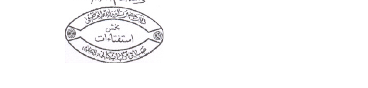
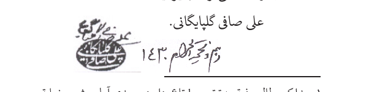
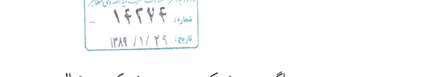

کلام، فلسفه و عرفان
بسم الله الرحمن الرحیم
امام باقر علیه السلام فرمودند:
اشاره۱۱
تفسیر هستی و رابطه خالق و مخلوق۱۹
ارزش کشف و شهودهای عارفنامان۴۶
عرفانهای نو ظهور و نو معنویت گرایان!۴۸
فلاسفه یونان اهل توحید و اخلاق؟ یا بت پرست و ضدّ اخلاق؟!۵۰
بخش سوم۸۴
نقد مکتب تفکیک میرزا مهدی اصفهانی۸۵
فصل اول: وحدت وجود و انکار معنای حقیقی خلقت۸۸
فصل دوم: سوفسطائیگری و کشف و شهود۹۳
سند مکتب میرزای اصفهانی و سایر وحدت وجودیان معاصر۹۵
میرزای اصفهانی و داستان غیر واقعی دیدار امام۹۹
نظری اجمالی به کتابهای «بدایة الحکمة» و «نهایة الحکمة»۱۰۳
نظرات برخی بزرگان در مورد «وحدت وجود» و مطالب فلسفه و عرفان۱۲۵
هنگامی که خلفای بنیامیه و بنیعباس برای معارضه با مکتب معارف نورانی اهل بیت علیهم السلام اندیشههای بیگانه را وارد اسلام کردند، امامان معصوم علیهم السلام و اصحاب بزرگوار ایشان به مبارزه با ایشان قیام نمودند و افرادی چون هشام بن الحکم و فضل بن شاذان و... کتابهای «ردّ بر ارسطو در توحید» و «الردّ علی الفلاسفه» و... را نوشتند.۱ متکلّمان مجاهد و نستوه شیعی پیوسته راه ایشان را ادامه دادند؛ اما گروهی دیگر مبانی یونانیان بتپرست۲ را پذیرفتند، و به تأویل نادرست عقاید وحیانی، و تطبیق آنها بر افکار ایشان پرداختند.
ایشان به جای اینکه یک دست به دامن قرآن و دست دیگر به دامن عترت بزنند، در یک دست فلسفه یونان، و در دست دیگر معارف قرآن و اهل بیت علیهم السلام
را گرفتند، و در راه تطبیق آن دو بر هم هر چه بیشتر کوشیدند در باتلاق تناقضگویی فروتر رفتند. لذا:
گاهی اقرار به وجود خالق متعال میکنند، و دیگرگاه میگویند واجب الوجود عین خود اشیا است!
گاهی میگویند عالم مخلوق خداست، و دیگرگاه میگویند خود خدا به صورت عالم تجلّی کرده است و ذات خداوند به صورت اشیای گوناگون در آمده است!
گاهی میگویند عالم حادث است، و دیگرگاه میگویند عالم حادث ذاتی و قدیم زمانی است، و وجود آن ازلی و دائمی میباشد!
گاهی به نبوّت انبیا و پذیرش وحی آسمانی زبان میگشایند، و دیگرگاه میگویند نبوّت مانند بلوغ یکی از حالات طبیعی همه افراد انسانی است که برخی به آن میرسند، و برخی دیگر قبل از رسیدن به آن میمیرند!
گاهی به مقامات امامان معصوم علیهم السلام اقرار میکنند، و دیگرگاه ایشان را هم فیلسوف و انسانی کامل میدانند، و فلاسفه را هم انسان کامل! و متّصل با خدا میشمارند، بلکه فراتر از آن ادّعا میکنند که انبیا و امامان علیهم السلام علم را به واسطه فرشتگان میگیرند، ولی اولیای فلسفه و عرفان بدون واسطه به مبدأ متّصل
میباشند!
گاهی به وجود معاد و بهشت و جهنم و ثواب و عقاب لب میگشایند، و دیگرگاه میگویند بهشت و دوزخ و ثواب و عقاب و معاد، همه و همه تخیلات و صور درونی نفس انسانی است!
امروزه بسیاری اساتید، پرچمدار عقایدی هستند که خلاف ضروریات اسلام و ادیان است و کتابهایی به عنوان اعتقادات اسلامی مورد تدریس، تحقیق، تدوین پایان نامه و اخذ مدرک قرار میگیرد که در گذشته به عنوان فنی از فنون شمرده میشد نه به عنوان معارف الهی و تعالیم مکتب وحی، لذا میبینیم که اینک:
۱) معنای توحید الهی به وحدت و یکی بودن وجود خالق و مخلوق تحریف و تأویل میشود.
۲) اعتقاد به حدوث عالم انکار شده و اعتقاد به حدوث ذاتی ازلی و قدم عالم جایگزین آن میگردد.
۳) معنای واقعی خلقت، به تطور و تغیر وجود خالق متعال به صورتهای مختلف تأویل میشود.
۴) در ضمن اثبات واجب الوجودی که کل الاشیاء است، در حقیقت وجود باری تعالی انکار میشود.
۵) اعتقاد به
جبر جایگزین اثبات اختیار میگردد.
۶) تحت عنوان حرکت تمام اشیا به سوی کمال و تجرد و فنا شدن در ذات خدا، معاد و وجود حقیقی بهشت و دوزخ انکار میگردد و...
ضروریات و براهین قطعی مکتب وحی ظواهر ظنی دینی! تعریف شده، و برخی اوهام دیگران علوم عقلی دانسته شده، و بررسی نظریات علمی، اهانت به علمای بزرگوار تلقی میگردد و به توهم دفاع از خدمتگزاران مکتب، با ضروریات و اصول قطعی و برهانی مکتب مخالفت میشود.
اغلب مؤسسات کلامی که در مباحث توحیدی فعالند نیز بیش از اینکه دارای مبانی کلامی باشند صبغه فلسفی و عرفانی دارند، چنان که «مکتب تفکیک میرزای اصفهانی» هم در این میان تولّد نامشروع یافته و به نام دفاع از معارف وحیانی، همان عقاید نادرست بیگانه را احیا و ترویج میکند.
لَوْلا ینْهاهُمُ الرَّبَّانِیونَ وَالاحْبارُ عَنْ قَوْلِهِمُ الاثْمَ وَأَكْلِهِمُ السُّحْتَ لَبِئْسَ ما كانُوا یصْنَعُونَ.۱
چرا دانشمندان وعلما، آنان را از سخنان گناه آمیز و خوردن مال حرام، نهی نمی کنند؟ همانا کار ایشان بسیار
زشت است.
رسول خدا صلّی الله علیه و آله میفرمایند:
آنگاه که بدعتها در امت من آشکار شد بر آگاهان است که علم خود را ظاهر نمایند و هر کس که نکند خدایش لعنت کند!۱
تذکر: همان طور که روش تمامی نقدهای علمی است در این نوشته نیز تنها محل شاهد مطالب آورده شده، اما در عین حال کاملا دقت شده است که با توجه به قبل و بعد کلام، مراد گویندگان تغییر نکند، و امانت علمی مراعات شود.
هر گاه سخن از اختلاف فقها و متکلمین با فلاسفه، و به تعبیر بهتر دین و فلسفه در میان میآید، مدافعان فلسفه بلا فاصله دامنه سخن را به دفاع از عقل و برهان و اصالت داشتن و راهگشا بودن آن میکشانند! اما آیا واقعا سبب اختلاف مسائل این دو گروه همان ارزش دادن ایشان به عقل و برهان، و نفی ارزش آن از جانب مخالفان ایشان است؟!
آیا متکلمین ما که خود غالبا
از بزرگترین پیشروان روش عقلانی بودهاند مانند شیخ مفید، سید مرتضی، شیخ طوسی، ابو صلاح حلبی، خواجه نصیر الدین طوسی۱ علامه حلی و فاضل مقداد و علامه مجلسی رحمهم الله و... در گزینش اعتقادات خود فقط متعبد به ظواهری ظنی و مشکوک بودهاند؟! آن هم مسائل مهمی مانند حدوث یا قدم عالم، ذاتی بودن یا حدوث اراده خداوند متعال، جبر یا اختیار در فعل انسان و خداوند، وحدت وجود و عینیت خدا با همه چیز یا فراتری او از هر شیء، و دیگر مسائلی از این قبیل که همیشه این دو گروه را در دو جبهه کاملا مخالف قرار داده است. مرحوم شیخ انصاری میفرمایند:
هر گاه از دلیل نقلی قطع حاصل شد، مانند قطعی که از اجماع همه شرایع بر حدوث زمانی عالم حاصل است، دیگر ممکن نیست به موجب دلیل عقلی مانند محال بودن تخلف اثر از مؤثر که عقیده فلاسفه است نیز قطع به خلاف آن حاصل گردد، و اگر
هم صورت برهانی از آن حاصل شد، شبههای واهی در مقابل مطلبی بدیهی خواهد بود.۱
خلاصه کلام اینکه معارف بلند دین و وحی کاملا عقلی و برهانی است، و متقابلا فلسفه و عرفان مطالب ظنی و وهمی و نادرست را برهان و عقل و استدلال انگاشته و بر دفاع از آن اصرار میورزد.
بخش اول
در مورد رابطه خالق و مخلوق به طور کلی دو دیدگاه وجود دارد:
*۱) دیدگاه فیلسوفان و عارفان و* *مکتب تفکیک میرزای اصفهانی:* این دیدگاه بر این پایه استوار است که جز وجود خداوند، هیچ وجودی در کار نیست و خداوند متعال هیچ وجودی خلق نکرده، بلکه جهان هستی و وجود سایر اشیا همان وجود خداوند است که به صورتها و شکلها و تعینهای گوناگون در آمده است و حتی وجود شیطان هم غیر وجود خدا نیست.
*۲) عقیده مکتب برهان و وحی:* بر خلاف اندیشه بشر ساخته پیشین، در این دیدگاه، جهان هستی، غیر وجود خداوند متعال است. همه اشیا مخلوق و آفریده او میباشند و او همه چیز را پس از نیستی حقیقی (لا من شیء) خلق نموده است. مخلوقات، نه پدید آمده از ذات خداوندند و نه مرتبهها، جلوهها، اجزاء، تعینها، اشکال و صورتهای وجود او.
ما قبل از ورود در بحث، نمونههایی از کلمات فیلسوفان و عارفان وحدت وجودی را میآوریم. سپس به
ارزیابی عقیده ایشان میپردازیم.
واجبالوجود همه چیزهاست؛ هیچ چیز از او بیرون نیست.۱
منزه آنکه اشیا را ظاهر کرد، و خود عین آنها است.۲
همانا خداوند منزه، همان خلق دارای همانند است!۳
تحقیقا آن ذات الهی همان است که به صورت خر و حیوان ظاهر شده است.۴
او به صورت خلق خود، بلکه عین هویت و حقیقت خلق خود است.۵
همانا خلق خدا به صورت خود خدا است. بلکه
حقیقت و هویت خلق عین حقیقت و هویت او است... لذا هیچیک از حکما و علما بر معرفت نفس و حقیقت آن اطلاع نیافتند مگر رسل الهی و أکابر صوفیه.۱
عارف حق را در هر چیزی؛ بلکه عین هر چیزی میبیند.۲
حق مشهود است و خلق موهوم... زیرا جز یکی بیش نیست و جز او عدم است.۳
هنگامی که ما خداوند را شهود میکنیم خودمان را شهود کردهایم، زیرا ذات ما عین ذات اوست، هیچ مغایرتی بین آن دو وجود ندارد جز اینکه ما به این صورت درآمدهایم و او بدون صورت است...؛ و هنگامی که او ما را شهود میکند، ذات خودش را _ که تعین یافته و به صورت ما
درآمده و ظهور کرده است _ مشاهده میکند.۱
معیت حق سبحانه با بنده نه چون معیت جسم است با جسم، بلکه چون معیت آب است با یخ، و خشت با خاک.۳
من نگفتم: «این سگ خداست». من گفتم: «غیر از خدا چیزی نیست»... وجود بالاصالة و حقیقة الوجود در جمیع عوالم... اوست تبارک و تعالی!۴
همه عالم خودِ اوست.۵
غیر متناهی كه صمد حق است به حیث كه لا یخلو منه شیء ولا یشذّ منه مثقال عشر عشر أعشار ذره.۶
معنای علیت و افاضه خداوند به این باز میگردد که خود
او به صورتهای مختلف و گوناگون درمیآید.۱.
همانا نامتناهی تمام وجود را پر کرده است، پس چگونه جایی برای فرض غیر او خواهد ماند؟۲
من و ما و تو و او هست یک چــیـز کـه در وحـدت نباشـد هیچ تمییز۳
والــــربط فـی مرحــلة الشـهــود عیــن ظهــــور واجــب الـوجود۴
چون به دقت بنگری آنچه در دار وجود است وجوب است و بحث در امکان برای سرگرمی است!۵
چون یک وجود هست و بود واجب و صمد
از ممکن این همه سخنان فسانه چیست؟۶
آنچه دیده میشود
همان حق است؛ و خلق، وهم و خیال میباشد.۱
هر چه غیر خدا باشد رشحه ذات اوست پس جدا از او نمیباشد.۲
تعین بر دو وجه متصور است یا بر سبیل تقابل، و یا بر سبیل احاطه که از آن تعبیر به احاطه شمولی نیز میکنند، و امر امتیاز از این دو وجه بدر نیست... تعین واجب تعالی از قبیل قسم دوم است زیرا که در مقابل او چیزی نیست، و او در مقابل چیزی نیست تا تمیز تقابلی داشته باشد... خلاصه مطلب این که... تعین و تمیز متمیز محیط و شامل به مادونش، چون تمیز کل از آن حیث که کل است... و نسبت حقیقة الحقایق با ماسوای مفروض چنین است.۳
تمثیلی که به عنوان تقریب در تشکیک اهل تحقیق توان گفت آب دریا و شکنهای اوست که شکنها امواج مظاهر آبند و جز
آب نیستند و تفاوت در عظم و صغر امواج است.۱
دعوت انبیا همین است که ای بیگانه به صورت، تو جزء منی... بیا ای جزء، از کل بیخبر مباش!۲
ز حد نقص خود سوی کمالی به سوی کل خود در ارتحالی۳
هر یك از ممكنات، مظهر یك اسم از اسمای حقند، هر چند گفتن و شنیدن این سخن دشوار است ولی حقیقت این است كه شیطان هم مظهر اسم «یا مضلّ» است!۴
آنچه موجود است از آن جهت که موجود است چیزی جز ذات حق نیست، و اصلا چیزی جز ذات خداوند و تجلیات او در پهنه هستی موجود نیست.۵ باید همه حقائق به ظاهر موجود را جلوههایی از آن وجود یکتا دانست که در لباس مخلوقات و در قالب
معین و محدود به جلوهگری میپردازد.۱
تمام اشیا در مقام ذات مندرج بودهاند... تمام ذرات از آنجا تابش کرده است.۲
وجود حق متعال متن وجود جمادات و نباتات و حیوانات و انسانها است، یعنی ما دو وجود نداریم، بلکه هر چه هست یک وجود است که در قوالب و اندازههای گوناگون ظهور کرده است، نه اینکه وجود زمین غیر از وجود آسمان، و وجود آسمان غیر از وجود حق متعال بوده باشد.۳
چه راحت است که از همان ابتدا سوفسطی بشویم و بگوییم اصلا الفی نداریم. و چه عجیب است که بالاخره همه ما در این مسیر باید سوفسطی شویم و بگوییم نه ما هستیم و نه دیگران هستند. فقط خداست و خدا. حرف اول و آخر خدا است، و خدا است دارد خدایی میکند. از آن به بعد دیگر انسان هیچ نگرانی ندارد و راحت میشود!۴ مراد ما از وحدت وجود، عینیت وجود زمین
و وجود آسمان با وجود حق متعال است!۱ انسان قابلیت رسیدن تا مقام ذات را دارد، و چون میبیند که نمیتواند آن ذات را پایین بیاورد و ذات را خودش کند لذا خودش بالا میرود و او میشود!۲
ممکنات... چون شؤون و روابط بیحدند نظیر امواج و دریا.۳
شایسته است که بلندترین هدف، مندرجشدن ذاتهای ما در درون ذات واجب باشد، همانطور که قطره در دریا قرار مییابد.۴
و اما تفسیر حصر وجود در خدا به اینكه خداوند موجود بالذات است و دیگران موجود بالغیر و مُوجِد آنها خداوند است هرگز با وحدت شخصی وجود هماهنگ نیست.۵ در عرفانْ، جهان نسبت به واجب تعالی نه وجود رابطی دارد مانند عرض و نه وجود رابط دارد مانند حرف و اصرار صدر المتألّهین (قدس سره) سودی ندارد، زیرا بر اساس وحدت شخصی وجود تنها مصداقی كه برای مفهوم وجود است همانا واجب
است كه مستقل میباشد و هرگز مصداق دیگری برای او نیست.۱ هیچ موجودی جز خداوند نیست و هرچه جز وجه او همواره معدوم است.۲
فلسفه و عرفان برای مبتدیان ادعا میکند که ما اجتماع نقیضین را محال میدانیم، چنان که میگوید:
اصل «امتناع تناقض» و اصل «اثبات واقعیت» دو «اصل متعارف» عمدهای است که مورد استفاده استدلالات و براهین فلسفی قرار میگیرد. در حقیقت این دو اصل به منزله دو بال اصلی است که سیر و پرواز فلسفی قوه عاقله را در صحنه پهناور هستی میسر میسازد.۳
و از طرف دیگر به بهانه واهی کشف و شهود، صریحا مقتضای عقل و برهان و فهم و ادراک را انکار میکند و میگوید:
در عقل نظری شیء واحد یعنی عین ذات خارجی در صورتی که علت است معلول نمیشود. ولی در این نظر فوق حکم عقلی که حکم کشف و شهود است این است که ذات، مجمع أضداد و متصف به ضدین و جامع
نقیضین است... ذات باری ... هم علت است و هم معلول!۱
به علّیت حکم کن اما به این معنا که علّیت، دارای صور و شؤون مختلف شدن است، نه معنای توحید که معتزلی به آن معتقد است!۲
ملاصدرا شیطان را دارای نور، و نور او را شایسته عبادت میداند، و مخالفان این مطالب را احمق و نادان و مجنون میشمارد، و میگوید:
همه چیز در عالم اصلش از حقیقت الهی، و سرش از اسم الهی است، و این را جز کاملان نمی شناسند!... خدا مجمع موجودات، و محل بازگشت همه چیز است، و همه اشیا مظاهر اسما و محل های تجلی صفات اویند!... حبیب من این چیزها را خوب بفهم که به مطالبی رسیدیم که اذهان اینها را نمی فهمد، و دسته احمقها و دیوانهها از شنیدن این اسرار به جنب و جوش میآیند! و بفهم سخنی را که گفته است: همانا نور شیطان از نار عزت خداست، و اگر نور شیطان ظاهر
میشد همه خلایق او را میپرستیدند!۱
نسبت وجود خداوند با عالم مانند نسبت بین کل دریا با امواج آن است، لذا خالق و مخلوق دو موجود واقعی و حقیقی نیستند بلکه اشیای عالم، اجزا و حصههای وجود خداوندند!
۱) تمامی ما سوی الله موجوداتی هستند که خداوند متعال آنها را بدون سابقه وجودیشان (لا من شیء) آفریده است، و سخیفترین عقیده این است که کسی بگوید خداوند به صورت اشیا در آمده و جز او و تجلیات و صورتهای وجود او چیز دیگری در کار نیست!
امام رضا علیه السلام فرمودند:
وای بر تو، آیا چگونه جسارت میورزی که پروردگار خود را موصوف به تغیر از حالی به حال دیگر بدانی، و آنچه را که بر مخلوقات بار میشود بر او بار کنی؟!۲
۲) بر اساس عقیده وحدت وجود لازم میآید که خداوند متعال دارای
زمان، مکان، حرکت، سکون، انتقال، دگرگونی، حدوث، زوال، جسمیت، صورت و شکل باشد، و چنین عقیدهای بر خلاف براهین مسلم و نصوص قطعی، بلکه خلاف ضرورت دین میباشد.
۳) عقیده فوق مستلزم نفی خالقیت خداوند متعال، و نفی مخلوقیت حقیقی عالم و بر خلاف ضرورت عقل و وحی است.
۴) عقیده فوق مساوی با انکار وجود خدا، و منحصر نمودن وجود به عالم متغیر است.
۵) عقیده فوق مستلزم بطلان شریعت، عبث بودن ارسال رسل، نصب امام و بطلان معاد است.
۶) تمامی بزرگان مکتب تشیع که در مقام فتوی و اظهار نظر درباره یکی بودن خالق و خلق برآمدهاند، این عقیده را باطل دانستهاند.
٧) اساس نظریه وحدت وجود این توهم باطل است که برخی خداوند متعال را «نامتناهی» پنداشتهاند در حالی که بدیهی است تناهی و عدم تناهی از خواص جسم میباشد، و خداوند متعال هرگز به خواص اجسام متصف نمیگردد. لذا کسی که خداوند را متناهی یا نامتناهی بداند، او را جسم دانسته است، اگر چه خودش هم متوجه نباشد. خود فلاسفه هم صریحا معترفند که متناهی بودن و نامتناهی بودن از خواص
کمّیت و اجسام است. چنانکه مینویسند:
تناهی و عدم تناهی از اعراض ذاتیای هستند که به کمیت و امتداد ملحق میشوند.۱
کمّ (امتداد)، عرض است... و ویژگیهایی اختصاصی دارد که... پنجمین آن صفات اختصاصی، متناهی بودن و نامتناهی بودن است.۲
مقصود از تناهی امتداد محدود، و مقصود از عدم تناهی امتداد نامحدود است... این دو وصف اولا و بالذات بر کمیت که همان امتداد و مقدار است عارض میشود و امور دیگر به واسطه کمیت بدان متصف میشوند.۳
بنابر این «تناهی و عدم تناهی» از ویژگیهای اشیای دارای اجزا، و امتداد، و حادث، و ممكن، و مخلوق است، لذا به چیزی که اصلا جزء و کل و امتداد وجود ندارد نه متناهی گفته میشود و نه نامتناهی. به عبارت دیگر «تناهی و عدم تناهی» دو معنای نقیض هم
نیستند که از بودن یا نبودن هر دو محال لازم آید، بلكه مانند «ملكه و عدم» تنها و تنها از صفات اجسام و اشیای متجزی و مخلوق میباشند، و خداوند تعالی كه خالق تمامی اشیای دارای مقدار و اجزا و كوچك و بزرگ است ذاتاً مباین با همه آنها میباشد. لذا خالق تعالی نه كوچك است و نه بزرگ، و نه متناهی و نه نامتناهی.
نیز بر خلاف توهم برخی افراد، هیچ روایتی وارد نشده است که دلالت بر نامتناهی بودن ذات خدا داشته باشد، بلکه روایات بر این دلالت دارد که خداوند متناهی نیست، و با توجه به توضیحی که دادیم البته نامتناهی هم نخواهد بود.
امیر المؤمنین علیه السلام میفرمایند:
بزرگی او اینگونه نیست که جوانب مختلف، او را به اطراف کشانده، و از او جسمی بزرگ ساخته باشند، و عظمت او چنان نیست که اطراف به او پایان یافته، و از او جسدی بزرگ ساخته باشند، بلکه او دارای بزرگی شأن و عظمت سلطنت است.۱
امام صادق علیه السلام میفرمایند:
همانا خداوند
تعالی جدا از خلقش، و خلقش جدا از او میباشند، و هر چیزی که نام شیء بر آن توان نهاد مخلوق است مگر خداوند عز و جل. و خداوند آفریننده همه چیز است، بس والاست آنکه هیچ چیز مانند او نیست.۱
امام صادق علیه السلام میفرمایند:
اگر خداوند به صورت خلق باشد، به چه نشانه و دلیلی استدلال خـواهد شد که یکـی از آن دو خـالق و آفرینـنده دیگری است؟!۲
امام رضا علیه السلام میفرماید:
اوست خداوند غیر قابل شناخت آگاه شنوای بینای یکتای یگانه بیمانندی که هیچ چیز از او صادر نشده، و او خود نیز از چیزی پدید نیامده، و هیچ چیزی مانند او نیست. آفریننده اشیا، و خالق اجسام، و پدید آورنده صورتها است. اگر چنان بود که ایشان میپندارند، خالق با مخلوق و آفریننده با آفریده شده تفاوتی نداشت، در حالی که او آفریننده و خالق است. فرق است بین او و اجسام و
صوری که او آنها را آفریده است؛ زیرا هیچ چیزی مانند او نیست، و او نیز مانند هیچ چیزی نمیباشد.۱
امام جواد علیه السلام میفرمایند:
همانا جز خداوند یگانه همه چیز دارای اجزا است، و خداوند یکتا نه دارای اجزا، و نه قابل فرض پذیرش کمی و زیادی میباشد. هر چیزی که دارای اجزا بوده، یا قابل تصور به پذیرش کمی و زیادی باشد مخلوق است و دلالت بر این میکند که او را خالقی میباشد.۲
وحدت وجودیان هنگامی که با سیل انتقادات عالمان به معارف مکتب وحی و برهان مواجه میشوند، برای فرار از اشکالات منتقدین میگویند: وحدت وجود معانی گوناگونی دارد که بعضی از آنها باطل است و بعضی دیگر صحیح میباشد!!
اما کمترین تأمل نشان میدهد معنای وحدت وجود یک چیز بیشتر نیست، و آن
همین است که آنچه موجود است حقیقتی واحد است که نه آغازی دارد، نه انجامی؛ و نه ابتدایی دارد، نه انتهایی؛ و نه خالقی دارد، نه آفرینندهای؛ بلکه همین حقیقت واحد هر لحظه به صورتی درمیآید و هر آن به شکلی در تجلی و ظهور است، و ارائه تفسیرهای مختلف برای وحدت وجود امری کاملا صوری و ظاهری است نه درونی و محتوایی.
تذکر این نکته ضرورت دارد که از جهت اصول و مبانی، هیچ تفاوتی بین نحلههای مختلف فلسفی و عرفانی وجود ندارد، مکتب «مشاء» و «اشراق» و «حکمت متعالیه» و «عرفان هندی» و «بودایی» و «یونانی» و «ابنعربی» و... همه یک چیز میگویند. بدیهی است هر کس زیر بار اعتقاد به معنای واقعی «خلقت و آفرینش الهی» نرود، و نپذیرد که خداوند متعال اشیا را بدون سابقه وجودی آنها (لا من شیء) آفریده است که البته تمامی اهل فلسفه و عرفان این چنینند باید «ذات خدا و خلق» را عینا یک چیز بداند، و تعدد و تغایر آنها را صرفا امری اعتباری و غیر واقعی مانند تفاوت بین «جزء و کل» و «دریا و امواج آن» بشمارد و بگوید:
چون به دقت بنگری آنچه در دار وجود است
وجوب است و بحث در امکان برای سرگرمی است.۱
غیرتش غیر در جهان نگذاشت لاجـرم عیـن جمله اشیا شد!۲
آنگاه شگفت اینکه در این دوران تهاجم لشکریان شیاطین و رواج تبلیغات پوچ و خائنانه مخالفان تعالیم مکتب وحی و برهان از شرق و غرب، چه بسیار متفكّرانی كه آب به آسیاب ایشان میریزند، و عمر گرانبهای خود و دیگران را در دفاع از اوهام جوکیان هند و بنگیان روم و بافتههای بتپرستان یونان و خیالات ایران باستان و القائات شیاطین به مصریان قدیم، و جست و جوی تفاوتهای خیالی مکتبهای مختلف فلسفی و عرفانی، یا تفاوتهای موهوم و ادّعایی معانی «صدور» و «تشكیک» و «تجلّی»؛ یا «وحدت وجود» و «وحدت وجود و موجود» مشغول میدارند!
از آنجا كه ادّعاهای عارفنامان وحدت وجودی، با مقتضای عقل و برهان موافق نمیباشد گاهی به مذمت عقل و استدلال پرداخته، و ادّعاهای خویش را به كشف و شهود مستند میسازند. ابن عربی
در ابتدای «فصوص الحكم»، (صفحه ٤٧ _ ٤٨) میگوید:
رسول خدا صلّی اللّه علیه وآله وسلّم را در اواخر محرم در خواب دیدم... در دست آن حضرت صلّی اللّه علیه وآله وسلّم كتابی بود، به من گفت: «این كتاب فصوص الحكم است»، آن را بگیر و برای مردمان ببر تا از آن بهرهور شوند... پس... همانطور كه رسول خدا صلّی اللّه علیه وآله وسلم برایم بیان داشت، بر ابراز این كتاب بدون كم و زیاد! همت گماشتم. اینك جز آنچه را كه به من القا میكند القا نمیكنم، و در این نوشته جز آنچه را كه بر من نازل میشود نازل نمیدارم !، من پیغمبر نیستم ولی وارث و كشتكننده برای آخرت خویش میباشم. پس از خدا بشنوید... و چون آنچه را گفتم شنیدید پس آن را حفظ كنید... و بعد از آن بر دیگران منت بگذارید و ایشان را از آن محروم نكنید. این رحمتی است كه شما را دریافته است پس به آن تن در دهید.
كیست كه بپرسد: اگر او واقعا خود را مأمور عالم غیب میداند و معتقد است تنها چیزهایی را كه از طرف خداوند! بر وی نازل! شده، برای دیگران آورده است، و دیگران باید آنها را با منّت! بپذیرند، دیگر این مطلب با ادّعای پیامبری چه تفاوتی دارد؟! و آیا تنها برای ساكت كردن
معترضان نیست كه میگوید: من پیغمبر نیستم؟! عجیبتر اینکه آن دیگران هم، حرفهایی را كه حتی از پیامبران نمیتوان پذیرفت از او میپذیرند!!
كاملا روشن است كه این ادّعاها هیچ اساسی ندارد لذا خود این مدعیان، چنین سخنانی را از یكدیگر نمیپذیرند، و افكار و ادّعاها و نوشتههای همدیگر را نقد و ابطال میكنند. ولی برخی دیگر این ادّعاها را باور كرده، بدون اینکه ذرهای قابلیت دفاع عقلانی در اندیشههای فیلسوفان و عارفان بیابند، سخنانی را كه ایشان به نفع خودشان گفتهاند پذیرفته، و نخبگان عرصه علم و تحقیق و برهان و استدلال و عقلانیت، عالمان فهیم و بیدار بزرگ را به نفهمی و جهالت متهم میسازند!
برخی خیال میکنند که اگر مکاشفات، موافق با عقل و وحی باشد الهی میباشد در حالی که این مطلب نیز باطل است، زیرا گاهی شیطان مکاشفاتی موافق با عقل و وحی ارائه میدهد تا افراد را به سوی خود بکشاند، و درآینده از آنان برای مقاصد انحرافی خود استفاده کند. بنا بر این جز مکتب عقل و وحی و شریعت الهی، هیچ راه دیگری کمترین ارزش و اعتباری ندارد.
اهل عرفان با دگرگون کردن اسامی تعبیرات، برای اولیای خود نبوتی به نام «نبوت
مقامی« و »نبوت عامه« ساختهاند و میگویند:
در »نبوت عامه« انباء و اخبار معارف الهیه است، یعنی ولی در مقام فنای فی اللّه بر حقائق و معارف الهیه اطلاع مییابد، و چون از آن گلشن راز باز آمد، از آن حقائق انباء یعنی اخبار میكند و اطلاع میدهد. چون این معنی برای اولیاء است و اختصاص به نبی و رسول تشریعی ندارد، در لسان اهل ولایت به »نبوت عامه« و دیگر اسمای یاد شده تعبیر میگردد.۱
پــس به هــر دوری ولــیی قائــم اســـت
تا قـــیـامـــــــــــــــــت آزمـــــایــش دائــم اسـت
پس امام حی قائـــــم آن ولــی اســـــت
خــواه از نــسل عمــر خواه از عـــلی است
(مولوی)
و »ابنعربی« بر این پندار است که:
شخص او دارای مقام »ختم ولایت« بوده، از تمامی انبیا و اولیا بالاتر میباشد!۲
آنچه را كه خاتم انبیا صلّی الله علیه وآله و سایر پیامبران به واسطه ملك از
خداوند دریافت داشتهاند، او بدون واسطه از خداوند استفاده نموده است!۱
ابوبکر، عمر و عثمان و عمر ابن عبد العزیز و متوکل دارای مقام خلافت ظاهری و باطنی بودهاند!۲
در شهود وی، مقام ابوبکر و عمر و عثمان از امیر المؤمنین علیه السلام برتر بوده است!!۳
حق را دو بار در خواب دیدم که به من میگفت: بندگان مرا به سوی خیر راه بنمای!!۴
شیخ الفلاسفه ابوعلی سینا، عمر بن خطاب را از امیرالمؤمنین علی علیه السلام عاقلتر، و برای امامت شایستهتر میداند و معتقد است:
اگر امامت و خلافت دائر بین دو نفر شد که یکی عاقلتر و سیاستمدارتر باشد و دیگری عالمتر، باید آن کس که عاقلتر است مقدّم شود، و آن کس که عالمتر است وزیر و کمککار او گردد، همانطور که عمر و علی چنین کردند!! ۵
به راستی آیا این همه تناقضات روشن و مغالطات آشکار که در سخنان معتقدین
به وحدت خالق و مخلوق و مدعیان کشف و شهود موجود است، و این همه نقد و اشکالهایی که خود ایشان بر یکدیگر دارند، گویای این است که پناه بر خدا خداوند و مأموران عالم غیب بر خطا و اشتباه و دارای عقاید متناقض و گوناگون!! میباشند، یا اینکه نشانگر این است که الهامگران به ایشان کسانی دیگرند، و این اسیران گرداب تفکر در امر شناخت ذات غیر قابل شناخت خداوند، دستخوش امواج خیالات خویش و وساوس آن موجودات ناشناخته و مرموز میباشند. قرآن میفرماید:
وَإِنَّ الشَّیاطِینَ لَیوحُونَ إِلی أَوْلِیائِهِم۱
همانا شیاطین به اولیای خود وحی و القا میکنند.
هَلْ أُنَبِّئُكُمْ عَلی مَنْ تَنَزَّلُ الشَّیاطِینُ تَنَزَّلُ عَلی كُلِّ أَفّاكٍ أَثِیمٍ۲
آیا به شما بگویم که شیاطین بر چه کسانی نازل میشوند؟ آنها بر دروغ پردازان گناهکار فرود میآیند.
امام صادق علیه السلام درباره فردی که مدعی ارتباط با عالم غیب بوده است فرمودند:
رسول خدا صلّی الله علیه و آله فرمودند: همانا شیطان در بین زمین و آسمان تخت
سلطنتی برنهاده و به عدد ملائكه یارانی برگزیده است، پس چون كسی را به سوی خویش دعوت كند و آن كس او را پاسخ گفته و مردمان پیرو او گردند، بر او تجلی میكند و او را به سوی عرش خویش بالا میبرد.۱
امام باقر علیه السلام میفرمایند:
هیچ شب و روزی نیست مگر اینکه تمامی جنیان و شیاطین، امامان گمراهی و ضلالت را دیدار کرده... برای ایشان سخنان ناروا و دروغ میآورند. لذا آن امام ضلالت هر روز میگوید که چنین و چنان شهود کردهام.۲
پیداست که هرگز خضوع و اشک و آه و... دلیل بر حقانیت کسی نیست و باید عقاید اشخاص را مورد ملاحظه قرار داد که آیا موافق مذهب حق میباشد یا نه. امام کاظم علیه السلام میفرمایند:
رسول خدا صلّی الله علیه وآله وسلم فرمودند: هر كس عملش بر اساس بدعت باشد شیطان مانع عبادت او
نشده، او را به خشوع و گریه وا میدارد.۱
در جوامع مختلف انسانی چه اهل دین و ایمان باشند، و چه اهل شرک و الحاد و بیدینی افرادی پیدا میشوند که به انجام کارهای خارقالعاده شناخته شدهاند، و با به چنگ آوردن نیروهایی در رابطه با شیاطین و جنیان به اظهار قدرت یا گرهگشایی از مشکلات دیگران میپردازند. این افراد خطرناک، در نهان ولایت شیاطین را پذیرفته و به کمک ایشان اموری را که در نظر سادهلوحان اموری الهی مینماید انجام میدهند.
از آنجا که این گروه در بین مسلمانان و پیروان ادیان نمیتوانند بهطور صریح دیگران را به سوی شیاطین دعوت کرده، و از ایشان پیمان بر ولایت آنها بگیرند، بهطور سربسته به ایشان میگویند: «این دعا یا این عمل را باید با اجازه من یا با اجازه فلان پیر و قطب انجام دهی و گرنه این دعا و عمل را اثری نیست!» مریدان سادهلوح هم نادانسته ولایت ایشان را تحت این عنوان مجمل میپذیرند، و اثرات گرهگشایی و کمکرسانی آن موجودات مرموز را به حساب خداوند و کارگزاران الهی عالم غیب میگذارند!
هر انسان عاقلی با اندک تأملی میفهمد که دعا و سؤال از درگاه الهی منوط به اجازه
و اذن هیچ شیخ و پیر و مرادی نبوده، و انجام این اعمال هرگز نشانه ارتباط با خدا و دین و مذهب و اعتقادات صحیح نبوده، و آنها را هر بیدین، یا مشرکی هم انجام میدهد و تنها شرط اساسی آن اتصال با نیروهای پنهان از چشم مریدان است، و هیچ تفاوتی نمیکند که آن نیروها شیاطین باشند یا جنیان یا چیز دیگر.
امیرالمؤمنین علیه السلام میفرمایند:
هرگز گول کسانی را مخور که نمازهای طولانی بهجا میآورند و بر روزه گرفتن مداومت دارند و صدقه میدهند و خیال میکنند که توفیق الهی شامل حال آنهاست!... به خدا سوگند میخورم شنیدم که رسول خدا میفرمودند: هر گاه شیطان گروهی را به کارهای زشت مانند زنا و شرابخواری و ربا و گناهانی مانند آنها وادارد، عبادت شدید و خشوع و رکوع و خضوع و سجود را هم محبوب آنها میسازد؛ سپس آنها را به پذیرش ولایت امامان غیر معصومی که مردم را به سوی آتش میخوانند و روز قیامت بییاور خواهند بود وامیدارد.۱
برای شناخت تفاوتهای سحر و
جادو، با معجزات انبیا علیهم السلام، باید دانست کسی که کار خارق العادهای به عنوان معجزه انجام میدهد، اگر ادّعای مناصب الهی مانند امامت یا نبوّت را نداشته باشد ما اصلا نیازی به شناختن او نداریم، ولی اگر ادّعای مناصب الهی مانند امامت یا نبوّت داشته باشد، چنانچه دروغگو باشد، خداوند تعالی او را رسوا مینماید، چرا که در غیر این صورت بندگانی که گمراه میشوند معذور خواهند بود، مگر اینکه دروغگو بودن او به دلیلی دیگر مانند دلیل ختم نبوّت، یا فسق و فجور آشکار او معلوم بوده، و نیازی به رسوا نمودن او نباشد.
هیچ تفاوتی بین عرفانهای نوظهور و باستانی و شرقی و غربی و یونانی و هندی و مصری و اروپایی و مسیحی و یهودی و سرخپوستی و اسلامی و سنی و شیعی جز در مقام ادّعای واهی و توخالی و ظاهری وجود ندارد، چرا که نو معنویتگراها نیز گویند:
خداوند، از شدت حضور، پنهان است... او در بیرون ماست، او در درون ماست، او از بس که هست، و همه جا و همه چیز را از خود
سرشار کرده است، دیده نمیشود... خدا در ماست!!۱
«اوشو» میگوید:
خدا جدا از شما نیست خدا نهایت هستی شماست... مثل یک رقاص که از رقصش جدا نیست، در واقع کل هستی خداست.۲
خداوند در همه جا هست پس چگونه میتواند در آن بتها نباشد؟ پس او در یک بت سنگی نیز هست.۳
سای بابا:
همه انسانها جزئی از خدای واحدند... من او هستم... شما همه سلولهای زندهای در بدن خداوندید.۴
عرفان آمریکایی اکنکار:
هر یک از ما میوه یا یک شاخه از درخت خداییم... هر یک از ما جرقه و شرارههای از سوگماد خدا هستیم.۵ ما در ذات خود از همان جوهریم که خدای تعالی... ماده چیزی نیست جز روح خدا که به شکلهای
پایینتری درآمد... ما خود حقیقت هستیم، حقیقت زنده و تجسم خود خدا... خدا در درون همه چیز وجود دارد... برای خدا هیچ تفاوتی نمیکند که چه شکلی به خود بگیرد.۱
یوگا:
ما با پروردگار همه جا ناظر و حاضر یکی هستیم... ما اکنون به همان اندازه جزئی از او هستیم که در آینده خواهیم بود.۲
شناخت اکثر مدافعان فلسفه در مورد فلاسفه یونان، مانند سقراط و افلاطون و ارسطو و... از طریق فارابی و ابن سینا و امثال ایشان است، و آنها نیز گاهی با چندین واسطه، از ترجمههایی از کتابهای یونانیان استفاده کردهاند که توسط مترجمان دستگاه خلافت اموی و عباسی صورت یافته و اصلا قابل اعتماد نیست، به همین جهت یونانیان را شخصیتهایی الهی پنداشتهاند. در حالی که
مراجعه صحیح به کتابهای ایشان روشن میکند که افراد مورد اشاره گروهی بتپرست، و معتقد به خدایان بیشمار، و منکر معاد و نبوت انبیا بوده، از جهت اخلاق اجتماعی و خانوادگی و فرهنگی نیز از پستترین ملل جهان درشمارند.
نیز ایشان افرادی همجنسباز و اشتراکی حتی در مورد زنان و فرزندان! بوده، در بازار سیاست هم دارای این فرهنگ میباشند که میگوید: «حق با کسی است که زور بیشتر دارد!» و «تفرقه بینداز و حکومت کن». بازیگریهای ضد اخلاق المپیک، و انتخاب ملکه زیبایی و امثال آن نیز از جنایتهای دیگر ایشان به بشریت است. لذا مطالب ذیل را (که گزینشی بسیار مختصر از کتاب «کنکاشی در تبار فلسفه یونان» است) مرور کنید:
ارسطو به پیروی از افلاطون و اساتید او بتپرست بوده است و خدایان یونان را مورد ستایش قرار میدهد. هلن روسپی، در یونان مورد ستایش و حتی پرستش قرار میگیرد. افلاطون به ترویج زنا و بی بند و باری، و شرابخواری و مستی (۶۵۴ قوانین)، و شرک و پرستش بتان زشت و شهوتپرست مستقر در کوه المپ (۴۱ تیمائوس)، و ترویج همجنس بازی (۲۳۹ فایدروس و ضیافت)، و اینکه همه زنان
متعلق به همه مردان باشند (۷۳۹ قوانین). معتقد است، و معیار تربیت خوب، را رقص و موسیقی (۶۵۴ قوانین) میداند. و پس از مرگ به تناسخ اعتقاد دارد (تیمائوس، ۹۱ _ ۹۲).
افلاطون خدایان كوه المپ را با تمام ضعفهایشان میپذیرد و میگوید:«مگر دیوانه باشیم كه دست التماس به درگاه همه خدایان برنداریم. (تیمائوس/٢٧). در رساله مهمانی افلاطون وقتی سخن از عشق به همجنس به میان میآید اروس خدای عشق مورد ستایش قرار میگیرد. در كتاب قوانین او سخن از ستایش دیونیزوس خدای شراب و مستی است. وقتی سخن از جنگ است ذكر خدای جنگ به میان میآید. نیایش و ستایش خدایان در تمام آثار افلاطون و ارسطو دیده میشود، و حتی سقراط خود را فرستاده آپولون یكی از خدایان میداند. ویل دورانت در مورد آكادمی افلاطون میگوید: آكادمی یك انجمن اخوت مذهبی بود كه در خدمت پرستش خدایان قرار داشت». (٥٧٢ / تاریخ تمدن _ رنسانس). افلاطون معتقد به اشتراك جنسی است و همه مردان را مال همه زنان میداند (قوانین
ش ٧٣٩). و شراب را سعادتی بزرگ و هدیه دیونیزوس خدای مستی میداند (قوانین ش / ٦٤٦). تجاوز به سرزمین دیگران و استعمار را تجویز مینماید (جمهوری ش ٣٧٣) و زناشوئی برادر با خواهر را جایز میشمارد. (جمهوری ش ٤٦١). و معتقد است انسانها پس از مرگ به بتها باز میگردند (تیمائوس ٤١). از دیدن پسران زیبا لذت میبرد و رسماً به همجنس بازی میپردازد و آن را تجویز مینماید. (مهمانی، ٤٣٠؛ فایدروس، ٢٣٩). در مسابقه ملكه زیبایی، زنان زیبا صورت و قد و سینه و أسافل أندام را به مسابقه میگذارند، و هیأت داوران مرد ملكه زیبایی را كه غالباً غربی است برمیگزینند. این كار زشت نیز ریشهای یونانی رومی تحت تعلیمات فلاسفه ایشان دارد. سقط جنین نیز مثل دیگر كارهای ناپسندیده ریشهای یونانی دارد. روسپیگری و فاحشگی به صورت رسمی، و سربازی زن، بدین معنی كه زنان نیز باید دوشادوش مردان بجنگند و حتی در ورزشها با بدنهای برهنه و عریان شركت كنند. (ش ٤٥٧ جمهوری) نیز ریشهای یونانی دارد. یونانیها هیچگونه عقیدهای به توحید و نبوّت و روز حساب و كتاب یا معاد نداشتند،
چنانكه افلاطون انسانها را از اخلاف خدایان (فرزندان و جانشینان بتهای كوه المپ) میداند و معتقد است كه در این دنیا انسانهای بدكار بعد از مرگ به صورت حیوانات درمیآیند. (تیمائوس/ شماره٩٢)، و انسانهای خوب به خدایان میپیوندند (تیمائوس، شماره ٤١) و خدا میشوند. (جمهوری شماره٤٦٩). افلاطون در كتاب قوانین میگوید:
بهترین سازمان اجتماعی و كاملترین حكومتها و شایستهترین قوانین را در جامعهای میتوان یافت كه... نه تنها همه اموال، بلكه زنان و كودكان نیز میان همه مردم مشترك باشند، و مالكیت شخصی از هر نوع و به هر كیفییت از بین برده شود.(قوانین /٧٣٩). افلاطون، در كتاب جمهوری در مورد اشتراك در زنان و كودكان میگوید: زنان پاسدار باید متعلق به همه مردان پاسدار باشند و هیچ یك از آنان نباید با مردی تنها زندگی كند. كودكان نیز باید در میان آنان مشترك باشند پدران نباید كودكان خود را از میان آنان تمییز دهند و كودكان نیز نباید پدران خود را بشناسند. (جمهوری /٤٥٧). پالرسل كتابی دارد بنام صد
همجنسباز مشهور؛ او در آن كتاب بعد از ذكر سقراط و افلاطون و ارائه مدارك، فصلی را نیز به اگوستینوس و فرانسیس بیكن اختصاص داده است. جواهر لعل نهرو میگوید: از ادبیات یونانی به خوبی پیداست كه روابط جنسی با همجنسان و لواط بد شمرده نمیشده است در واقع این روابط صورت عاشقانه هم پیدا میكرده است. ظاهرا صورت ادبی این شده بود كه معبود و معشوق به صورت جنس نر نمایانده شود و مرد باشد... هرودت مورخ یونان باستان با افتخار تمام میگوید: (پارسها) روابط جنسی با پسران را از یونانیان آموختهاند. (تاریخ هرودت، هدایتی، ١٣٥). افلاطون در كتاب مهمانی ازخدای عشق نام میبرد و میگوید: روس كه با آفرودیت پیوند دارد از مردی تنها پدید آمده است و در ایجاد او زنی سهیم نبوده از این رو روی با پسران دارد و كسانی كه از او الهام مییابند تنها به پسران دل میبازند كه طبعاً هم خردمندتر از زنانند وهم نیرومندتر از آنان. (ش ١٨١ مهمانی).
گونهای از نظریات انحرافی جنسی فلسفه یونان، با عنوان «عشق مجازی» به بسیاری از
مکاتب فلسفی و عرفانی راه یافته است، برخی از مطالب ملاصدرا در این باره این است:
در بیان عشق به پسر بچههای با نمک و زیباروی:
بدان که نظرات فلاسفه در این عشق، و پسندیده و ناپسند بودن آن متفاوت است. آنچه که با نظر دقیق میتوان گفت این است که چون که این عشق در وجود بیشتر ملّتها به نحو طبیعی موجود است پس ناگزیر باید نیکو و پسندیده باشد. به جان خودم قسم، این عشق نفس انسان را از دردسرها و سختیها نجات میدهد و همّت انسان را به یک چیز مشغول و معطوف میکند که آن عشق زیبایی انسان است که در آن مظهر خیلی از زیبائیهای خداوند است. و به همین دلیل برخی از مشایخ و بزرگان عرفان پیروان خود را أمر میکردند که در اوّل این راه باید عاشق شوند.
زمانی نهایت آرزوی عاشق برآورده میشود که به او نزدیک شود و با او هم صحبت گردد و با حصول این مطلب چیز بالاتری را میخواهد و آن این است که آرزو میکند ای کاش با معشوق خلوت کرده و بدون حضور شخص
دیگری با او هم صحبت گردد، و باز با برآورده شدن این حاجت میخواهد که با او هم آغوش گشته و او را بوسهباران کند، تا میرسد به جایی که آرزو میکند که ای کاش با معشوق در
یک لحاف و رختخواب قرار گیرد و تمام اعضای خود را تا جایی که راه دارد به او بچسباند، و با این حال آن شوق اولیه و سوز و گداز نفس بر جای خود باقی است، بلکه به مرور زمان اضافه نیز میگردد کما این که شاعر نیز بر این مطلب اشاره کرده است: با او معانقه در آغوش گرفتن کردم
باز هم نفسم به او مشتاق است و آیا نزدیکتر از معانقه و در آغوش گرفتن چیزی تصوّر دارد؟! و لبهای او را مکیدم شاید حرارت درونی من از بین برود اما با این کار فقط هیجان درونیم افزایش یافت. گویا تشنگی من پایانپذیر
نیست مگر که روح من و معشوقم یکی شود.۱
ابن عربی و شارح کتاب وی آقای حسن زاده تصریح میکنند که مواقعه و عمل زناشویی بین زن و مرد در واقع بین مرد و خدا واقع میشود، چنان که بر خلاف ضرورت عقل و وحی، و بر خلاف ادب و نزاکت اسلامی و اخلاق اجتماعی، در مجامعت و مواقعه مرد و زن، خدا را فاعل و منفعل! دانستهاند، و همین را هم مقتضای وحدت شخصیه وجود! (که البته این مسأله حتی زنا و لواط و مواقعه مشرکین و ملحدین و ناصبیها را هم شامل میشود!) و خلقت خداوند و پیدا شدن خلق را، مانند تولید مثل انسان از منی خود! دانستهاند، و همین را هم مقتضای معارف قرآن و روایات و علوم اهل بیت علیهم السلام!۲
صوفیان و عارفان با نهان داشتن چهره واقعی خود در پس پرده فریبنده «ولایت» و «تصرف در شؤون هستی» در صورتی كه به اعتراف خود ایشان، صدور این امور از هر مرتاض ملحدی ممكن است
فرهنگ «توحید» و «نبوّت» و «امامت» و «ولایت» و «عبادت» و «مسؤولیت» و «روشنگری» مكتب قرآن و وحی را تحریف كردند، و به جای آن «وحدت وجود» و «جبر» و «جنگیری» و «كهانت» و «بیمسؤولیتی» و «اباحیگری» و «رقص» و «سماع» و... را به ارمغان آوردند! «شمس تبریزی» میگوید:
اگر از تو پرسند كه مولانا را چون شناختی؟ بگو: از قولش میپرسی _ «إنّما أمره إذا أراد شیئاً أن یقول له كن فیكون»۱، و اگر از فعلش میپرسی «كلّ یوم هو فی شأن»۲ و اگر از صفتش میپرسی «قل هو الله أحد»۳، و اگر از نامش میپرسی «هو الله الذی لا اله الا هو عالم الغیب والشهادة هو الرحمن الرحیم»۴، و اگر از ذاتش میپرسی «لیس كمثله شیء وهو السمیع البصیر۵».۶
«شمس تبریزی» مقام معرفت و خوف و خشیت برترین بانوی خلقت و یکتا کفو امیر عالم آفرینش، حضرت فاطمه زهرا علیهما السلام را
خوار و پست شمرده، میگوید:
فاطمه رضی الله عنها عارفه نبود، زاهده بود. پیوسته از پیغمبر حکایت دوزخ پرسیدی.۱
آری، این است مقامات ادّعایی عارفان واصل و پیران تصوّف و عرفان! و این است علایم واضح و آشكار عداوت و دشمنی ایشان با پاكان آفرینش، تا دیگر هرگز كسی جسارتهای بیشرمانه آنان را حمل بر تقیه نكند، و ایشان را از شیعیان آل الله به شمار نیاورد!
همو نیز، وجود «ایمان مجسم» و «حق مطلق» امیر المؤمنین علیه السلام را رهیافت هوا و هوس میداند، و میسراید:
آنان که هنوز در اثر فریبندگی اشعار و تبلیغات سوء اهل عرفان آنقدر از نصوص مکتب
وحی و روش انبیا و امامان هدی علیهم السلام دور نیفتادهاند که مجلس شعر و سماع و رقص و موسیقی و کاباره مختلط زنانه و مردانه، و گروه ارکستر را بر مجلس زهد و تقوی و عقل و عدل و قرآن و نهج البلاغه و صحیفه سجادیه ترجیح دهند، بدانند:
مولوی در عقاید و افكار و تعلیمات خود به سه عنصر علم الجمال تكیه كرده بود: عشق، موسیقی، سماع. و در تمام آثار خود از موسیقی به عنوان یك «هنر متعالی» یاد میكند. او هم معتقد بود كه: آنجا كه سخنباز میماند، موسیقی آغاز میشود. زبان موسیقی زبان جهانی است و زبان عاشقان است.۱ به روایت «افلاكی» در «مناقب العارفین» علاقهی مولوی به نی و رباب۲ قونیه را از نوای موسیقی پر كرده بود. حتی در حال وضو گرفتن نیز بانگ رباب گوش درویشان را نوازش میكرد و به نظر آنان دیگر بدعت به صورت سنّت درآمده بود.۳
مولوی پس از برخورد با شمس، موسیقی و دوستی سماع را تا بدان حد گسترش میدهد که حتی به طور هفتگی،
مجلسی ویژه سماع بانوان، همراه با گل افشانی و رقص و پایکوبی زنان در قونیه بر پا میدارد... تا جایی که حتی در مواردی چون سرگرم رباب و موسیقی میشده نمازش را وا میگذاشته است، و با وجود تذکار به وی، موسیقی را رها نمیکرده، بلکه نماز را ترک میگفته است!۱
البته ایشان با کمال بیشرمی معتقدند که بدعتهایشان، مساوی با فرمایشات انبیا علیهم السلام است و میگویند:
بدعت اولیای حق، به مثابت سنّت انبیای کرام است!۲
ابن عربی، خود را یگانه حجت بی نظیر الهی در تمام عالم، و در تمام دورانها! و بالاتر از امام هر زمان میداند! و گوید:
«ومنهم رضي الله عنهم الختم وهو واحد لا في کلّ زمان بل هو واحد في العالَم، يختم الله به الولاية المحمّديّة
فلا يکون في الأولياء المحمدييّن أکبر منه.«۱
»و از جمله ایشان «ختم» میباشد که او تنها یک نفر است اما نه در هر زمانی بلکه در تمام جهان و کل عالَم، که خداوند ولایت محمدیه را به او خاتمه دهد و در اولیای محمدی بزرگتر از وجود ندارد«.
»روح مجرد« هم مینویسد:
»بیتی را بر در راهرو و ورودی قبر محی الدین به سرداب نوشتهاند و این بیت از خود اوست:
ولـکلّ عصـر واحـد يسمــو به وأنا لباقي العصر ذاک الواحد
در هر عصر و دورهای یک نفر به وجود میآید که آن عصر به واسطه وجود او عظمت مییابد و من برای تمام اعصار
و دورههای آینده آن یک نفر میباشم«.
بلکه او مقام اختصاصی الهی خود را از جهتی افضل و اعلی و بلند مرتبهتر از خاتم انبیا صلی الله علیه و آله و سلم میداند.۱
و برای توجیه افضلیت خود از رسول خدا صلّی الله علیه و آله و سلّم، به مجعولات اهل سنت این گونه استدلال میکند که عمر و برخی اصحاب هم از رسول خدا در بعضی جهات افضل! بودهاند.۲
او برای عنوان »خاتم الاولیاء« به دو معنا معتقد است یکی مقام الهی اختصاصی و بینظیری که هیچ فاصلهای با پیامبر ندارد مانند ابوبکر! و این معنا را به خودش۳ نسبت میدهد، و دیگری به معنای آخرین خلیفه سیاسی پیامبر که او را همان حضرت مهدی علیه السلام که در علم و کشف نیازمند به وزرای خود است میداند.
و میگوید که پیامبر صلّی الله
علیه و آله و سلم به مدت امامت حضرت مهدی و تعداد وزیران آن حضرت عالم نبوده و در این مورد شک داشته است:
«وإنّما شكّ رسول الله ص في مدّة إقامته خليفة من خمس إلي تسع للشكّ الذي وقع في وزرائه لأنّه لكلّ وزير معه سنة فإن كانوا خمسة عاش خمسة و إن كانوا سبعة عاش سبعة و إن كانوا تسعة عاش تسعة».۱
و اما در مورد خودش مدعی است که به این مطلب عالم بوده و مانند پیامبر شک و تردید نداشته است! بلکه بالاتر اینکه ادعا میکند از خداوند نخواسته است که امام زمانش را بشناسد و از معرفت امام زمانش (که بر اساس ادله قطعی عقلی و نقلی اساس ایمان است) تنفر داشته است! که مبادا برای لحظاتی از معرفت خدا و مقامات شهودهای خود بیبهره! بماند، و وقتش را در طلب امام زمانش ضایع! کند، و از آنان که به دنبال معرفت امام زمانشان میباشند _ که من مات ولم یعرف امام زمانه مات میتة
جاهلیة۱ _ اظهار کراهت و تنفر میکند.۲
و امام زمان علیه السلام را جاهل و نادانتر از وزیران خود، و محتاج به علم و دانش و بصیرت و تدبیر و علم غیب ایشان میداند.۳
ابن عربی متقابلا خود را از حضرت مهدی علیه السلام داناتر و حکیمتر، دانسته بلکه خود را برادر قرآن و حضرت مهدی علیه السلام را برادر شمشیر دانسته است:
«وأمّا ختم
الولاية المحمّديّة فهو أعلم الخلق بالله لا يكون في زمانه ولا بعد زمانه أعلم بالله وبمواقع الحكم منه فهو والقرآن أخوان كما أن المهديّ والسيف أخوان«.۱
او در مقابل معنای بلند و بینظیر ختم ولایتی که برای خود قائل است، امام مهدی علیه السلام را هم:
به معنای سرلشکری که نیازمند به علم وزیران خود باشد خاتم اولیا میداند!
مدعی است که ممکن
نیست خُلق و خوی امام علیه السلام مانند پیامبر باشد! بلکه فقط خَلق و شکل و قیافه او مانند پیامبر است!
گویا رگ مسیحی و جاسوس اندلسی بودن او به وی اجازه نمیدهد که بگوید عیسی به نماز امام علیه السلام اقتدا میکند! (یا اینکه ذبیح را از اولاد اسماعیل علیه و آله السلام بداند!) بلکه حتی بر خلاف مذهب سنیان، مدعی است که مهدی به عیسی اقتدا میکند!
عنوان باب مربوط به حضرت مهدی علیه السلام را به بیان منزلت وزرای مهدی که ایشان را از مهدی عالمتر و بالاتر میداند اختصاص میدهد نه خود وی که او را از وزرایش پایینتر و جاهلتر میداند!
تمامی اهل شریعت را مخالف وی معرفی میکند، و فقط
اهل کشف و شهود صوفیانه را پیرو او میداند!۱
بدون شک بسیاری از ناصبیان و دشمنان اهل بیت حتی معاویه و عمرو عاص هم ناچار به بیان فضایل اهل بیت علیهم السلام بودهاند، لذا این مطلب هرگز علامت تشیع گویندگان نیست، و کمترین فضیلتی را برای گویندگان اثبات نمیکند، بلکه نشانه سنی یا شیعه بودن این است که کسی امیر المؤمنین علی ابن ابیطالب علیهما السلام را خلیفه بلا فصل پیامبر اکرم صلی الله علیه وآله و سلم بداند یا ابوبکر را. و البته ابن عربی با صراحت تمام و با تکرار و اصرار بیش از حد بیان میدارد که طبق حکمت الهی! ابوبکر خلیفه اول، و علی خلیفه چهارم پیامبر است! و بعد از افاضه فیوضات خود! تمام مخالفان این امر یعنی تمام انبیا و امامان معصوم و همه شیعیان و بالنتیجه خود خدا را هم! اهل تعصب جاهلی، و اهل هوا و
بازی، و غرق در باطل میداند!۱
و ابو بکر را:
۱) معجزه پیامبر!
۲) و از تمام امت بالاتر،
۳) و همو را و البته بعد از او عمر و عثمان و امیر المؤمنین و امام مجتبی علیهما السلام را برای امامت پیشتر و شایستهتر دانسته!
۴) و تمام زمین و آسمان را در سجده و خضوع برای او
۵) و مخالفان ابوبکر را که در صدر ایشان حضرت فاطمه سلام الله علیها و امیر المؤمنین علیهما السلام میباشند چون مخالفان خدا! و کسانی میشمارد که به سبب نادانی و شبهات
باطله، خود را در مقابل او بر حق میدانستهاند!!۱
و در مقامات خاص آسمانی، ابوبکر را تنها شخص لایق قیام مقام نبی صلی الله علیه وآله وسلم شمرده، و ماسوای او را تحت حکم وی داند.۲
و ابوبکر را دارای حضور دائم در محضر الهی! و بالاترین قرب به پیامبر! حتی فراتر از
امیر المؤمنین علیه السلام! داند.۱
و در شهادت رسول الله صلی الله علیه وآله همه حتی امیر المؤمنین علیه السلام را از دست دادگان عقل و باطلسرا! دانسته غیر از ابوبکر.۲
و خوارج و محاربان با حضرت امیر المؤمنین و فاطمه علیهما السلام را بر اساس شهادت پیامبر! صلی الله علیه و آله و سلم اهل بهشت داند.۳
و نصّ پیامبر صلّی الله علیه و آله بر امامت امیر المؤمنین علیه السلام را انکار می کند.۴
و أب الإیمان و حجر الاسلام حضرت ابوطالب علیه السلام را کافر میشمارد.۵
ابن عربی عصمتی همچون عصمت پیامبر صلّی الله علیه وآله را برای عمر بن الخطاب قائل شده که هیچ کدام از عامه چنین عصمتی برای او قائل نشده اند، او میگوید:
و از
استوانههای این مقام عمر بن خطاب میباشد که پیامبری که خداوند به او قدرت را عطا کرده به او گفت: ای عمر هیچ گاه شیطان تو را در یک مسیر نمیبیند الا این که مسیری غیر از مسیر تو را برمیگزیند. پس این کلام که شهادت معصوم است به دلالت بر عصمت عُمر و این که ما میدانیم شیطان همیشه میخواهد در راه باطل قدم بگذارد و آن راه باطل به گفته پیغمبر غیر از راه عمر بن خطاب است. پس عُمر بنا بر این فرمایش همیشه راه حق را پیموده و در این راه سرزنش هیچ سرزنش کنندهای او را از راه های حق به خاطر خدا باز نمیدارد و او برای حق یک بزرگی محسوب میشود و چون این که حق را هر کسی نمیتواند بپذیرد و معمولا حل آن بر نفس انسانها مشکل است و آن را قبول نکرده و بلکه آن را ردّ میکنند به خاطر همین پیامبر فرموده که حق طلبی عُمر هیچ دوستی برای او باقی نگذاشته است!۱
اقطابی که در اصطلاح به طور مطلق به این نام میباشند، در هر
زمانی جز یک نفر نیستند که همو غوث -- فریادرس- نیز میباشد، او از مقربین و امام و پیشوای گروه در زمان خود است؛ و برخی از ایشان دارای حکم ظاهر نیز هست و حائز خلافت ظاهره هم میشود همان گونه که از حیث مقام دارای خلافت باطنی نیز میباشد مانند ابوبکر و عمر و عثمان و علی و حسن و معاویه بن یزید و عمر بن عبدالعزیز و متوکل.۱
«ابنعربی» بر این پندار است که:
در کشف و شهود، حقیقت شیعیان مانند سگ و خوک دیده میشود!۲
و امامیه و شیعیان امیر المؤمنین علیه السلام را گمراه و منحرف و گمراه کننده خوانده، و ایشان را به جهت دشمنیشان با دشمنان اهل بیت علیهم السلام مورد خدعه، بلکه استاد شیطان دانسته، به جهت اعتقادشان به مقدم بودن اهل بیت علیهم السلام بر
دیگران، بیایمان به خدا و پیامبر میانگارد.۱
و در مورد «اولی الأمر، مطالبی مینگارد که در نتیجه آن صریحا رئیس الکفرة و الفجرة یزید بن معاویة بن ابی سفیان بن حرب میشود خلیفه خداوند! و سید الشهداء حسین بن علیّ بی ابی طالب علیهم السلام میشود مشرکی که یزید به فرمان و وظیفه الهیش با او جهاد کرده و او را به قتل رسانده است!۲
بخش دوم
یكی از اصول و قواعد مسلّم فلسفی این است که هر امری باید به نحو جبری و قطعی و غیر قابل تخلّف به دنبال امر دگر پیدا شود (قانون جبر علّی و معلولی). ایشان پیدا شدن اختیار و اراده انسان را به عنوان یکی از اجزای علت تامه فعل اختیاری نیز مشمول همین قانون میدانند. بدیهی است با اعتقاد به چنین قانونی باید بهطور قطعی پذیرفت كه هیچ فاعلی در فعل خویش دارای اختیار واقعی نبوده و تمامی افعال به نحو جبر و ضرورت تحقّق مییابد. فلسفه میگوید:
همه چیز به نحو ضرورت و وجوب تحقق مییابد.۱
غیر از واجب بالذات، همه ممکنات حتی افعال اختیاری، فعل خداوند است که بدون
واسطه یا با واسطه از آن او میباشد.۱
در کتاب «الهی نامه» نیز آمده است:
جز این نمیشد، با که درآویزیم؟۲
در این زمینه عرفان پا فراتر گذاشته گوید جز ذات خدا هیچ موجود دیگری نیست که سخن از جبر یا اختیار آن در میان آید!
جمله نابود > نگویی اختـــــــــــــــــیـــارت از کجـــــا بود > هر آن کس را که مذهب غیر جبر است > نبـی فـــــــــــــــرمــود کـاو ماننـــد گبر اسـت۱
پیر قونیه مولوی هم موافق با سایر جبری مسلکان سنی و هممذهب خویش، «ابنملجم»، شکافنده شریانهای مقدس خون خدا را، آلت حق میشمارد! و بزرگ جنایت او را که روی تاریخ بشریت را سیاه کرده است غیر قابل طعن و ملامت میداند!! و به هواداری از خوارج و نواصب از زبان امیر عالم وجود، خطاب به «ابنملجم» میسراید:
همو در دفاع از مکتب اهل جبر میگوید:
موجد است > فــــــعــــل مـــا آثـــار خلـــق ایــــــــــــــــــزد اســــــــت۱
در جهان خارج هیچ فعلی نیست مگر فعل خداوند سبحان، و این حقیقتی است که برهان و ذوق هر دو بر آن دلالت دارد.۲
فاعل، در هر موطن اوست، و موثری جز وی نیست.۳
هر فعلی در عالم صورت میگیرد فاعلش اوست.۴
رسول خدا صلّی الله علیه وآله میفرمایند:
در آخر الزمان گروهی باشند که گناهان و معاصی را انجام دهند و گویند که خداوند آن را بر ایشان مقدر فرموده است. کسی که ایشان را رد کند مانند کسی است که در راه خداوند شمشیر کشیده باشد.۵
حضرت رضا علیه السلام میفرمایند:
هر کس به تشبیه و جبر اعتقاد داشته باشد مشرک است و ما در دنیا و آخرت از او بیزاریم.۶
میرزا مهدی اصفهانی، مدتهای مدیدی از عمر خویش را به سیر و سلوکهای عرفانی وحدت وجودی سپری نمود، سپس از نجف اشرف به مشهد مقدس نقل مكان نموده، با ادّعای توبه و بازگشت از مطالب فلسفی و عرفانی، به نقد فلسفه و عرفان پرداخت و شاگردانی تربیت كرد، اما تأمل در خور نشان میدهد كه مكتب ایشان گرچه تحت عنوان نقد و ابطال فلسفه و عرفان شهرت یافته است، ولی بر خلاف این شهرت، مطالبی تحویل داده است که عینا همان مطالب فلاسفه و عرفا میباشد، و با مبانی مكتب عقل و وحی و اعتقادات فقها و علمای بزرگوار شیعه کاملا مباین است. چنان که:
الف) نظریه مکتب ایشان این است که جز وجود خداوند هیچ وجودی در کار نیست. و خداوند نمیتواند هیچ چیزی خلق نماید، و الا لازم میآید وجود خودش محدود شود.
ب) در مکتب مذکور
پیمودن راه استدلال عقلی و برهانی، و کسب یقین به معارف الهی از طریق آن، صرفاً ضلالت و گمراهی و طریق مجانین است، در این مکتب تمامی تصوّرات و تصدیقات، ضلالت و جهالت است. و حتی در مورد معرفت واقعی خداوند باید در حالت نفی تعقّل و تفکّر، كنه وجود خداوند را در وجود خود یافت و وجدان كرد. و اینک تفصیل مطالب ایشان در دو فصل:
پیروان میرزای اصفهانی در طریق معرفت خداوند تعالی و رابطه خالق و خلق، دقیقاً همان راهی را میروند که فلاسفه رفتهاند، چرا که ایشان نیز منکر معنای حقیقی خلقت و آفرینش بوده، و وجود اشیا را به نفس وجود خدا میدانند، نه به آفرینش الهی. چنانکه میگویند:
کائنات از جهت ذات، بدون اینکه جعل و آفرینشی در کار باشد موجود و محقّق به خدایند. و همین است جاعلیت ذاتی بدون فعل خداوند... ذات مجعولاتی که به این غیر موجودند مجعولیت ذاتی میباشد بدون اینکه
جعل خلقت و فعل و تأثیر و مانند اینها باشد.۱
هر گاه به این وجود صادر اول از نظر شکل و صورت و این بودن آن نگاه کنی، ناچار باید آن را نور محمد و مخلوق بدانی و حق نداری بگویی که آن خداست... و اگر نظر به اصل نوریت و وجود آن کنی و از تعین و شکل آن چشم بپوشی، به طور کلی از خلق صرف نظر کرده و به خدا توجه نمودهای.۲
غیر از خدا و وجود او هیچ چیزی نیست وگرنه لازم میآید خدا محدود باشد.۳ هیچ وجودی نیست مگر وجود خدا. ۴
قاعده (سنخیت) در اعطای حق، کمالات نوری را، جاری است،
انوار علم و حیات و سایر کمالات نوری، علم ذاتی حق و اشراقات ذاتیه اوست.۱
نور خدا همیشه مطلق غیر متعین است، در عین این که این مخلوقات اسما و تعینات و صفات اویند.۲
در واقع و نفس الامر، با قطع نظر از شکلها و محدودیتها... او نور محمد صلّی الله علیه وآله خدای تعالی است.۳
در عالم به هیچ وجه شرک نمیباشد.۴ شیطان هم نور وجود دارد. وجود نور است.۵ حتی شمر هم دارای نور ولایت است.۶
اگر در مقابل و به محاذات علم و قدرت خدا، علم و قدرت و وجود دیگری باشد لازم میآید که خدا علم و قدرت و وجود خودش را واجد، و علم و قدرت و وجود
دیگران را فاقد باشد، پس در خدا ترکیب پیش میآید... بنا بر این غیر وجود و نور و علم و قدرت خدا، وجود و نور و علم و قدرت دیگری نیست.۱
بر همگان روشن است که اختلاف اساسی مکتب وحی و برهان با فلسفه و عرفان، و در صدر ایشان با خود صدر الفلاسفه، در این است که مکتب وحی و برهان میگوید همه ما سوی الله مخلوق خداوندند و او آنها را «لا من شیء» یعنی بدون سابقه وجودی آنها آفریده است. امّا فلسفه و عرفان منکر معنای حقیقی خلقت است، و اشیا را در مقابل خداوند موجود نمیداند، بلکه آنها را مانند معنای حرفی، قائم به خدا، و در حقیقت جزء خدا میداند نه مخلوق او.
پیروان میرزای اصفهانی در این جهت نیز تابع ایشانند و میگویند:
کائنات اعم از پیغمبر یا غیره ظلاند... قائم بالذات نیستند. قائم به غیرند... رتبه بشر، رتبه حیات و وجود نیست. بنا بر این چنانچه قائل به این مطلب باشیم شرک محض است.۲ و معنای بالغیر بودن
در عالم تشبیه، مانند سایه شیء است.۱
ملا صدرا... میگوید ممکنات، وجود امکانی، وجود رابطه است، اصلا معنای حرفی محض است، معنای حرفی استقلال به هیچ وجه ندارد. حرف هو القائم بالغیر.۲ ملا صدرا میگوید وجود امکانی مثل معنای حرفی است، کنهش بالغیر است، اینجا درست فهمیده.۳
در حقیقت وجود نخواهد شد که چیز دیگری موجود باشد. در نور شمس وجود، وجود دیگری موجود نمیشود و الا اجتماع نقیضین میشود.۴
حقیقت مختص ذات خداوند است. ذات مختص حضرت ربّ العزه میباشد. پس تو ذات، خدا هم ذات؟ تو حقیقت، خدا هم حقیقت؟ نه نه نه. غلط محض است کفر محض است. اگر چنین
باشد پس تو هم مقابل خدایی. تو یکی خدا هم یکی!۱
اتباع میرزای اصفهانی تنها راه واقعی معرفت را جدا شدن از تفکّر و تعقّل میدانند، بلکه واقعیت را فقط شهود نفسی خود میدانند و نام این شیوه نادرست را هم حجیت ذاتی عقل! و شناخت عقل به عقل، و شناخت وجود به وجود، و معرفت خدا به خدا میگذارند:
تمامی معقولات بدیهی و ضروری، ظلمت است، و کشف کردن حقیقتهای نوری یا ظلمانی با آنها عین باطل میباشد. و طلب معرفت از این راه، عین گمراهی و ضلالت آشکار است، چرا که آن کج راهه و روش دیوانگان است.۲ تصورات و تصدیقات هیچ نتیجهای ندارند جز یقین، و هیچ امانی هم از خطای یقین در کار نیست.۳
برای فهم حقیقی مطالب عالم اظله و اشباح راه منحصر در تجرید و خلع بدن و وجدان نمودن خویش است... در این حالت خودتان را
وجدان میکنید و روزنهای از آن مقام اظله و اشباح را خواهید فهمید. من متغیرم پس مغیر دارم، اینها تمام صور عقلیه است. اینها وجدان خدا نیست.۱
این راه فقط تجرید میخواهد تجرید از علایق، خلاص شدن از علایق، همه علایق را بر طرف کردن، این راهش است. بعد منتظر بودن است که ببیند از حق چه میریزد توی دلش.۲
عین خود خدا را یافتند نه مفهوم واجب الوجود، و نه مفهوم مصداق.۳ یافتن خدا تنها از سیر وجدان میسّر است (نه عقل و...).۴
تا انسان معتدل است و هوشیاری دارد، هرگز کسی نمیتواند به او بگوید که تو خدایی!۵
مشاهده او ولهی و اندکاکی است و انسان چیزی نمیتواند بگوید.۶ خداوند تعالی... به ذات خود ظاهر است.۷
مراد از فطرت توحیدی، معرفت و شناخت میباشد نه
عقیده به خدا.۱ این مشاهده قلبی بدون واسطه هر گونه تصور و مفهومی انجام مییابد.۲
پس اعتقاد به محال بودن معرفت خدا و بستن باب معرفت کنه ذات خدا... باطل میباشد.۳
شکی نیست که حفظ سلسلهها و مراتب و روابط خاصّ مرید و مرادی و لو اینکه تحت عنوان استاد و شاگرد باشد و لزوم رعایت اجازات۴ از اصول ضروری و مسلم مرام متصوفه است، و این مسأله هم، خلاف ضروریات مبانی اسلام و مکتب اهلبیت علیهم السلام میباشد. با این حال باز هم مکتب میرزای اصفهانی از این رویه نادرست پیروی کرده، چنانکه گاهی در مکتب ایشان هم ادّعا میشود میرزا مهدی اصفهانی پس از روی گرداندن از فلسفه و عرفان، در عالم لا فکری به خدمت شخصی به نام صاحب علم جمعی میرسیده، و
از او کسب معارف مینموده است. و جالب این که بر اساس آنچه در کتاب تقریرات، به طور رمزی و سری بیان شده است، استاد و سر سلسله این مکتب نیز، جز استاد عرفای وحدت وجودی دوران معاصر (جولایی گمنام و مشکوک الهویة) کس دیگری نیست. همانها که میرزا به شدّت ادّعای مخالفت با آنها را داشته، و بر بطلان و انحراف آنان تأکید میورزیده است. چنان که در كتاب «طرائق الحقایق» که تألیف رحمت علی شاه نعمت اللهی شیرازی میباشد، و در بیان طریقه صوفیان شاه نعمت اللهی، و شرح حال مشایخ و اقطاب صوفیه نگاشته شده است و نیز در کتاب «لب اللباب» میخوانیم:
حدود متجاوز از یکصد سال پیش در شوشتر... آقا سید علی شوشتری... به تصدی امور عامّه از تدریس و قضا و مرجعیت اشتغال داشته. یک روز ناگهان کسی در منزل را میزند... در را باز میکند میبیند شخص جولایی بافندهای است... میگوید: فلان حکمی را که نمودهاید طبق دعوی شهود... صحیح نیست... ملک متعلق به طفل یتیمی است و قباله آن در فلان محل دفن است. این راهی که شما در پیش گرفتهاید صحیح نیست... و
میرود. آیت الله در فکر فرو میرود این مرد که بود و چه سخنی گفت؟ در صدد تحقیق برمیآید. معلوم میشود که در همان محل، قباله ملک یتیم مدفون است و شهود بر ملکیت فلان، شاهد زور بودهاند. بسیار بر خود میترسد... شب بعد... جولا در میزند میگوید: آقا سید علی شوشتری، راه این نیست که شما میروید. و در شب سوم... جولا میگوید: معطل نشوید... به نجف اشرف مشرف شوید و وظایفی را که به شما گفتهام انجام دهید و پس از شش ماه در وادی السلام نجف اشرف به انتظار من باشید... مرحوم شوشتری... در اولین وهلهای که وارد نجف اشرف میشوند، در وادی السلام هنگام طلوع آفتاب مرد جولا را میبیند که گویی از زمین جوشیده و در برابرش حاضر گردید و دستوراتی داده و پنهان شد. مرحوم شوشتری... طبق دستورات جولا عمل میکنند تا میرسند به درجه و مقامی که قابل بیان و ذکر نیست... استاد بزرگوار عارف بی بدیل مرحوم حاج میرزا علی آقا قاضی تبریزی از شاگردان مکتب مرحوم آقا سید احمد کربلایی هستند که ایشان و حاج میرزا جواد آقا ملکی تبریزی و حاج
شیخ محمد بهاری شاگردان آخوند ملا حسینقلی همدانی و او شاگرد سید علی شوشتری و او هم صاحب داستان جولا بودهاند. این است سلسله اساتید ما که بالاخره به آن شخص جولا منتهی میشود، ولی آن مرد جولا چه کسی بوده و به کجا ارتباط داشته... هیچ معلوم نیست.۱
واقعاً انسان از اعتماد ایشان به شخصی ناشناس به شگفت میآید! جایی که فقها حتی در یک مسأله فرعی و مختصر فقهی به روایت شخص مجهول اعتماد نمیکنند، چگونه فلاسفه و عرفا و پیروان میرزای اصفهانی در مطلبی که تمام اصول و فروع دین و امر دنیا و آخرت ایشان را تحت الشعاع قرار میدهد خود را موظف به اجرای دستورات کسی قرار میدهند که به صراحت اعتراف میکنند اصلا معلوم نیست چه کسی بوده، یا با چه نیروهایی ارتباط داشته است. آن هم بر اساس خبری که هر مرتاض بیدینی ممکن است مانند آن را بگوید! و نیز اصلا معلوم نیست که آیا آن سند ساختگی بوده است یا واقعی؟ روشن است که این روش جولا منافی و مخالف با ضرورت دین اسلام است، چه اینکه سیره و سنّت قطعی اسلام و مسلمانان به طور پیوسته بر حکم
بر مبنای شهادت شهود جریان داشته و دارد.
برخی پیروان میرزای اصفهانی درباره وی مدّعیاند:
... حضرتش به او نظری خاص داشتهاند؛ لبان او را بوسیدهاند؛ بر او تجلّی فرمودهاند؛ حضرت او را انتخاب کردهاند که متحمّل علومشان بشود و علومشان را پخش کند... متوسّل به حضرت شده بود. حضرت در بیداری بر سر قبر هود و صالح در وادی السلام نجف تشریف فرما شدند و بر او تجلّی کردند، و راه را به او نمایاندند. آن بزرگ این چنین آدمی بوده است... سرانجام متوسّل به حضرت شد، و ایشان بر او تجلّی کردند. نواری سبز رنگ که با خطی نورانی بر آن عبارات زیر نوشته شده بود، جلو سینه مبارکشان بود: «طلب المعارف من غیر طریقنا أهل البیت مساوق لإنکارنا». وقد أقامني الله وأنا حجة بن الحسن.۱
داستان فوق از جهات متعددی مخدوش است زیرا:
۱) میرزای اصفهانی به استناد دست نوشتهخود او که در پایان کتاب ابواب الهدی
توسط پیروان وی کلیشه شده است تصریح میکند که آنچه بیان شد در خواب بوده است نه بیداری، و در حجره بوده است نه در وادی السلام، و دیدن یک ورقه بوده است نه امام عصر علیه السلام.
۲) اصل عبارت منسوب به حضرت تحریف شده است، زیرا میرزا به قلم خود مینویسد که عبارت چنین بوده است: «طلب المعارف من غیرنا اهل البیت مساوق لانکارهم»! نه «لانکارنا».
۳) نام حضرت، غلط و بر خلاف قواعد عربی میباشد، چرا که صحیح این است که گفته شود الحجة ابن الحسن، نه حجة بن الحسن! و این نام در پشت ورقه بوده است نه امضای آن مطلب.
۴) غلط دیگر از جهت قواعد عربیت این است که همزه وصل «ابن» در کتابت و امضای امام زمان علیه السلام حذف شده است.
۵) عبارت مذکور هیچ فضیلتی را اثبات نمیکند بلکه امامان معصوم علیهم السلام بارها چنین مطلبی را حتی به مخالفان خود هم فرمودهاند و با ایشان اتمام حجت فرمودهاند.
٦) اگر تحمّل علوم اهل بیت علیهم السلام از راه مراجعه به کتب اخبار و روایات بوده است که قطعا تحمل و پخش آنها سالها و بارها قبل از وجود میرزا انجام یافته است، و اگر از راه کشف و شهود و تجرید و خلسه و... بوده
است، پس بر چه اساسی آقایان با شیخیه و صوفیه و عرفا مخالفت و مبارزه میکنند؟!
٩) به طور کلی هرگز نباید برای افراد غیر معصوم مقاماتی ساخت که اختصاص به معصومین علیهم السلام دارد، و هیچ تفاوتی نمیکند که نام او را قطب بگذارد یا مرشد، یا استاد، یا پیر، یا دارای علم کلی، یا صاحب علم جمعی، یا صاحب نفس و اجازه، یا رکن رابع،یا انسان کامل، یا دارای چشم برزخی، یا عارف ربّانی، یا فقیه صوفی، یا...
بخش چهارم
کتابهای «نهایة الحکمة و بدایةالحکمة»:
۱. عالم را قدیم و ازلی میشمارد؛
۲. خود عالم را واجب الوجود بالذات حتی نه واجب بالغیر میداند؛۱
۳. خدا را متغیر و
متطور به صورت همه موجودات میداند؛۱
۴. هر چیزی که را دیده میشود جزئی و مرتبهای و شکلی و صورتی از ذات خدا داند؛
۵. جز صدور شیء واحد را از خالق متعال جایز نمی شمارد؛
۶. وجود مجردات ازلی را میپذیرد؛
همه چیز، حتی همه اجسام را داخل و درون ذات خدا داند؛۲
۷. مدافع عقیده به تعدد قدما است؛
۸. اراده خداوند را واجب و قدیم و ازلی و عین ذات خدا دانسته، و فعل و ترک را خارج از سلطنت واقعی باری تعالی میشمارد؛۳
۹. منکر معنای حقیقی خلق لا من شیء است، و تمام موجودات و
جمادات و حیوانات و اعیان نجسه و انسان ها و افعال همه آن ها را عین ذات و فعل خدا میداند؛۱
۱۰. معنای حقیقی تشکیک را تحریف کرده، و آن را به معنای این میداند که اشیاء مراتب و اجزای ذات خداوندند؛۲
۱۱. علیت و معلولیت را به معنای تطور ذات علت، و جزء و کل میداند؛
۱۲. ظاهر عنوانش ابطال دور و تسلسل است، ولی متن و محتوایش اثبات دور و تسلسل؛
۱۳. معنای معاد را به معنای رجوع و دخول اشیاء به ذات احدیت میداند، و در حقیقت معاد را انکار کرده است؛
۱۴. معنای حقیقی قدرت را
تحریف کرده و آن را به معنای اشتمال ذات باری بر همه موجودات، و جزء و کل میداند، و در حقیقت قدرت باری تعالی را انکار کرده است در لفافه اثبات؛
۱۵. معنای حقیقی علم را تحریف کرده به معنای وجود اشیاءو ذوات اجسام در ذات باری میداند، و در حقیقت علم باری تعالی را انکار میکند در لفافه اثبات؛
۱۶. معنای حسن و قبح عقلی را تحریف نموده، و در لفافه اثبات، حقیقت آن دو را انکار میکند؛
۱۷. از ادله جبریها دفاع میکند، و همه افعال و گناهان و معاصی را هم با واسطه بلکه بلا واسطه، فعل خدا میداند؛۱
۱۸. نفس را مجرد، و منقطع محض از علم به عالم خارج میداند، و در حقیقت مدافع سوفسطائی
گری و منکر واقعیت، تحت عنوان بی محتوای اثبات واقعیت است؛
۱۹. هر یقینی را عین واقع میداند که در نتیجه منکر جهل مرکب بوده، و هر کافر و ملحد متیقنی معصوم و غیر مخطی خواهد بود؛۱
...
ما اندکی از مدارک و شواهد دال بر مدعای خویش در اثبات تقابلات مذکور را در عنوان بعدی آوردهایم.
به شهادت صریح مشاهیر
فلسفه و عرفان۱ کتاب «نهایة الحکمة و بدایةالحکمة»، خلاصه و چکیده و تأیید و تشیید مبانی کتاب اسفار است، و کتاب اسفار نیز به تصریح ایشان، خلاصه و چکیده و تأیید و تشیید مبانی کتاب فتوحات و فصوص ابن عربی است، که بطلان آنها را مکررا نشان دادهایم.
۱. وحدت و عینیت وجود خالق و مخلوق؛ و داخل دانستن وجود همه اشیاء در ذات خدا، و انکار خلقت و آفرینش الهی در دو کتاب مورد اشاره:
«إنّ حقیقة الوجود التي هي عین الأعیان وحاقّ الواقع... یمتنع علیها العدم واجبة
الوجود بالذات«.۱
»همانا حقیقت وجود که عین اعیان و حاق واقع و شامل همه اشیا است... واجب الوجود بالذات میباشد و عدم آن محال است.
«لا یشذ عنه وجود».۲
«هیچ وجودی از او بیرون نیست.
»الوجودات الإمكانیّة كائنة ما كانت... محاطة له بمعنى ما لیس بخارج«.۳
»وجودهای امکانی هر چه باشند... محاط خدایند یعنی از او بیرون نیستند.
... فی إثبات ذاته تعالی... لبطلان الغیر... إذ لا غیر هناک...۴
... در اثبات ذات خدای تعالی... به جهت بطلان همه چیز غیر از او... چون اصلا آنجا غیر او چیزی نیست...
۲. خداوند مجموعه تمامی اشیاء است نه خالق فراتر از آنها!
«إنّ العلّة تمام وجود معلولها... أنّ
تمام الشيء هو الشيء وما یفضل علیه«.۱
»علت، تمام وجود معلول است... و تمام شیء، خود آن شیء است و بیشتر از آن«.
۳. عالم، حاصل اراده و ایجاد باری نبوده بلکه خود خداست!
»قول بعضهم إنّ علّة الإیجاد هی إرادة الواجب بالذات دون ذاته المتعالیة كلام لا محصّل له«.۲
»بعضی عقیده دارند که علت ایجاد عالم، اراده خداست نه ذات خدا، در حالی که این عقیده نادرست است«.
»فالعلّة هي نفس الوجود الذي یصدر عنه وجود المعلول«.۳
»علت، خود همان وجودی است که وجود معلول از آن صادر میشود«.
۴. عجز و ناتوانی خداوند از آفرینش بیش از یک چیز!
»الواجب تعالى... لا یفیض إلّا وجوداً واحدا بسیطاً له كلّ كمال وجودي«.۴
»واجب تعالی... افاضه نمیکند
مگر وجود واحد بسیطی را که دارای تمامی کمالات وجودی است«.
۵. نفی وجود خالق متعال در دو کتاب مورد اشاره:
»تقدّم الوجود على الوجود فهو تقدّم آخر غیر ما بالعلّیّة إذ لیس بینهما تأثیر وتأثّر ولا فاعلیّة ولا مفعولیّة بل حكمهما حكم شيء واحد له شؤون وأطوار وله تطوّر من طور إلى طور«.۱
»تقدم وجود بر وجود، تقدم علّیت نیست، بلکه تقدمی دیگر است، زیرا تأثیر و علّیت و فاعلیت و مفعولیتی بین وجودها نیست، و حکم وجودها حکم یک چیز واحد است که شؤون اطوار و صورتها و دگرگونیها دارد و از حالتی به حالت دیگر در میآید«.
»قول بعضهم إنّ علّة الإیجاد مشیئته و إرادته تعالى دون ذاته كلام لا محصّل له«.۲
»عقیده کسانی که میگویند علت ایجاد عالم، مشیت و اراده خداست نه ذات او،
عقیدهای نادرست است و معنای صحیحی ندارد«.
۶. تحریف معنای حقیقی علت و معلول و خالق و مخلوق
»الوجودات الإمكانیّة كائنة ما كانت... محاطة له بمعنى ما لیس بخارج«.۱
»وجودهای امکانی هر چه باشند... محاط خدایند یعنی از او بیرون نیستند«.
»إنّ الموجود الرابط... هو موجود فی غیره... بمعنى ما لیس بخارج... لا بمعنى الجزئیّة والتركب... وهو نوع من حمل الحقیقة والرقیقة«.۲
»همانا موجود رابط... در غیر خود موجود است... به این معناکه خارج از آن نیست... ولی نه به معنای جزئیت و ترکیب!... و این نوعی از حمل حقیقت و رقیقت است!«
٧. خدا یعنی همه موجودات، و کلّ عالم هستی!
»إنّ العلّة تمام وجود معلولها«. ۳
»همانا علت،
تمام وجود معلول است«.
إنّ تمام الشیء هو الشيء وما یفضل علیه».۱
«همانا تمام شیء، خود همان شیء است و آنچه که زاید بر آن است».
«من الواجب فی التشکیک أن یشمل الشدید علی الضعیف وزیادة».۲
در تشکیک، و اجب است که شدید، مشتمل باشد بر ضعیف و زیادت بر آن«.
۸. همه ممکنات، واجب الوجود و قدیم و مراتب و اجزای ذات خدایند!
النور حقیقة واحدة بسیطة متكثّرة في عین وحدتها ومتوحّدة في عین كثرتها كذلك الوجود حقیقة واحدة ذات مراتب مختلفة بالشدة والضعف».۳
«نور حقیقت واحد بسیطی است که در عین کثرت خود واحد است! و در عین وحدت خود کثیر است! همین طور وجود هم حقیقت واحدی است که دارای مراتب مختلف شدید و ضعیف میباشد».
«إنّ وجود المعلول بقیاسه
إلى علّته وجود رابط موجود فی غیره«.۱
»همانا وجود معلول نسبت به وجود علت خود رابط و موجود در غیر خود میباشد«.
۹. خلق کردن و رزق دادن خداوند غیر اختیاری است!
»فكونه تعالى بحیث یخلق وكونه بحیث یرزق إلى غیر ذلك صفات واجبة ومرجعها إلى الإضافة الإشراقیّة«.۲
»اینکه خدا به گونهای باشد که خلق کند و روزی دهد و همچنین بقیه صفات او واجب و لازم است، و معنای آن به اضافه اشراقیه برمی گردد«.
۱۰. ذات خدای تعالی شبیه یا هم سنخ خلق!
»إنّ الواحد لا یصدر عنه إلّا الواحد ولمّا كان الواجب تعالى واحداً بسیطاً من كلّ وجه... لا یفیض إلّا وجوداً واحداً بسیطاً له كلّ كمال وجودي لمكان المسانخة بین العلّة والمعلول«.۳
»از واحد جز واحدی صادر
نشود و چون واجب تعالی از هر جت واحد و بسیط است... جز یک وجود واحد بسیط که همه کمالات وجودی را دارد خلق نکند زیرا باید بین علت و معلول هم سنخی باشد«.
»من الواجب أن یكون بین المعلول وعلّته سنخیّة ذاتیّة«.۱
»واجب است که بین معلول و علتش سنخیت ذاتی باشد«.
۱۱. اعتقاد به آلهه و خدایان متعدد و ارباب انواع، و نسبت دادن خلقت و ربوبیت به غیر خدا!
»إنّ هذا العالم المادّيّ معلول لعالم نوریّ مجرّد عن المادّة متقدّس عن القوّة«.۲
»همانا این عالم مادی، معلول و آفریده عالمی نوری و مجرد از ماده، و فراتر از امکان و تغیر است«.
»مرتبة الوجود العقلیّ معلولة للواجب تعالى بلا واسطة وعلّة متوسّطة لما دونها من المثال ومرتبة المثال معلولة للعقل وعلّة لمرتبة المادّة والمادّیّات«.۳
»مرتبه وجود
عقلی، بلا واسطه آفریده واجب تعالی است و خالق متوسط برای ما دون عالم مثال میباشد، و مرتبه مثال آفریده عقل و خالق مرتبه عالم ماده و مادیات است«.
»إنّ عالم العقل علّة مفیضة لعالم المثال وعالم المثال علّة مفیضة لعالم المادّة«.۱
»همانا عالم عقل، آفریننده عالم مثال است؛ و عالم مثال آفریننده عالم ماده است«.
۱۲. تغیر و تطور ذات خداوند به اطوار و صورتهای مختلف:
»تقدّم الوجود على الوجود فهو تقدّم آخر غیر ما بالعلّیّة إذ لیس بینهما تأثیر وتأثّر ولا فاعلیّة ولا مفعولیّة بل حكمهما حكم شيء واحد له شؤون وأطوار وله تطوّر من طور إلى طور«.۲
»تقدم وجود بر وجود، از باب علیت نیست بلکه نوع دیگری از تقدم است، زیرا بین دو وجود، هیچ تأثیر و تأثر و فاعلیت و خالقیت و
مفعولیت و مخلوقیت نیست، بلکه حکم آن دو حکم وجود واحدی است که دارای شؤون و اطوار و دگرگونیهاست، و از حالی به حال دیگر میرود«.
۱۳. اراده الهی صفت ذات خداوند و به معنای علم اوست نه صفت فعل او!
»وعلمه الذي هو عین ذاته علّة لما سواه«.۱
»و علم خدا که عین ذات اوست، علت وجود ماسوای اوست«.
»بعض من لم یجد بدّاً من إیجاب العلّة التامّة لمعلولها قال بأنّ علّة العالم هي إرادة الواجب دون ذاته تعالى وهو أسخف ما قیل في هذا المقام«.۲
»بعضی افراد۳ که از اقرار به ایجابی و ضروری بودن وجود معلول نسبت به علت تامه راه فراری نداشتهاند ناچارا معتقد شدهاند که علت عالم، اراده و خلقت و آفرینش خداوند متعال است نه ذات خدا، و این
عقیده پستترین عقیده در این مورد است!.«
۱۴. قدرت خدای تعالی به معنای مبدء بودن ذات او برای صدور اشیاء!
»قدرته مبدئیّته لكلّ شيء سواه بذاته«.۱
قدرت خدا، مبدئیت او به ذات خود است برای تمامی اشیا».
«إنّ قدرته تعالى هي مبدئیّته للإیجاد وعلّیّته لما سواه وهي عین الذات المتعالیة».۲
«همانا قدرت خدای تعالى، همان مبدئیت او برای إیجاد، و علّیت او برای ما سوای اوست که آن عین ذات متعالی او میباشد».
۱۵. اجمال و تفصیل و حدوث، در ذات و علم خداوند تعالی!
«فما سواه من شيء فهو معلوم له تعالى في مرتبة ذاته المتعالیة علماً تفصیلیّاً في عین الإجمال وإجمالیّاً في عین التفصیل... أمّا المجرّدة منها فبأنفسها وأمّا المادّیّة فبصورها المجرّدة. فتبیّن بما مرّ أنّ للواجب تعالى علماً...
وأنّه علم إجمالیّ فی عین الكشف التفصیلیّ وأنّ له تعالى علماً تفصیلیّاً بما سوى ذاته من الموجودات في مرتبة ذواتها خارجاً من الذات المتعالیة وهو العلم بعد الإیجاد«.۱
»تمام چیزهایی که غیر خداست در مرتبه ذات متعالی خدا برای او معلوم است به علم تفصیلی در عین اجمال، و علم اجمالی در عین تفصیل... مجردات بدون واسطه برای او معلومند بر اساس علم حضوری فلسفی، ذات آنها در ذات خدا موجود است، و مادیها به واسطه صورتهای مجرد خود برای او معلومند در ذات او موجودند. پس روشن شد که واجب تعالی را علمی است... و آن علم اجمالی در عین کشف تفصیلی است و او تعالی به ماسوای ذات خود علم تصیلی در مرتبه ذوات آنها دارد که خارج از ذات اوست و آن همان علم بعد از ایجاد است«.
»یكشف بتفاصیل صفاته التي هي عین ذاته
المقدّسة عن إجمال ذاته كالواجب تعالى«.۱
»کشف میکند به تفاصیل صفاتش که عین ذات مقدس اوست از اجمال ذاتش مانند واجب تعالی«.
» كان الواجب تعالى واحداً... واجداً لكلّ كمال وجوديّ وجداناً تفصیلیّاً في عین الإجمال«.۲
»واجب تعالی از هر جهتی واحد... واجد همه کمالات وجودی است واجدیتی تفصیلی در عین اجمال«.
۱۶. خداوند دارای علم حصولی است!
»فهی معلومة له علماً حضوریّاً في مرتبة وجوداتها المجرّدة منها بأنفسها والمادّیّة منها بصورها المجرّدة«.۳
»پس آنها برای او معلومند به علمی حضوری در مرتبه وجودهای آنها، مجردات به نفس خودشان و بدون واسطه در ذات او حضور و وجود دارند، و مادیها صورتهای مجرد آنها علم حصولی در ذات او حضور و وجود دارد«.
۱۷. اعتقاد به جبر و نسبت دادن افعال بندگان به
خداوند!
«إنّ العلّة التامّة یلزم من وجودها وجود المعلول ومن عدمها عدمه».۱
«معلول، لازمه وجود علت تامه است، و عدم معلول هم لازمه عدم علت میباشد».
«إذا كانت العلّة التامّة موجودة وجب وجود معلولها».۲
«هر گاه علت تامه موجود باشد وجود معلول آن واجب است».
«إنّ المعلول لا ینفكّ وجوده عن وجود علّته كما أنّ العلّة التامّة لا تنفكّ عن معلولها».۳
«وجود معلول از وجود علت خود انفکاک پذیر نیست، کما اینکه علت تامه هم از معلول خود انفکاک ندارد».
«إنّ الواجب بالذات علّة تامّة ینتهي إلیه كل موجود ممكن بلا واسطة أو بواسطة أو وسائط بمعنى أنّ الحقیقة الواجبیّة هي العلّة بعینها».۴
«همانا واجب بالذات، علت تامهای است که تمامی موجودات
ممکن و بر مبنای فلسفه حتی همه گناهان و معاصی بدون واسطه یا با یک واسطه و با با چند واسطه به او میرسند به معنای اینکه خود حقیقت واجب خدا علت و به وجود آورنده است«.
بخش پنجم
«
علامه حلّی« قدّس سرّه میفرماید:
برخی صوفیان سنی مذهب گفته اند: »خداوند نفس وجود است، و هر موجودی همان خداست«. و این مطلب عین کفر و الحاد است. و حمد مر خدایی را که ما را به پیروی از اهل بیت علیهم السلام نه پیروی از نظرات گمراه کننده فضیلت و برتری بخشید.۱
فارق بین اسلام و فلسفه این مسأله است که خداوند قادر نبوده و مجبور باشد، و این همان کفر صریح است.۲
سؤال سید مهنّا از علامه حلّی رحمه الله تعالی:
چه میفرمایید در مورد کسی که به توحید و عدل و نبوت و إمامت معتقد است اما میگوید عالم
قدیم است؟ حکم وی در دنیا و آخرت چیست؟
پاسخ علامه حلّی قدّس الله نفسه:
بدون اختلاف بین علما هر کس معتقد به قدم عالم باشد کافر است، زیرا فرق مسلمان با کافر همین است، و حکم او در آخرت، به اجماع، حکم بقیه کفار است.۱
قطب الدین راوندی قدّس سرّه میفرماید:
فلاسفه اصول اسلام را اخذ کرده، سپس آنها را بر طبق آرای خود تفسیر و تأویل کردند... آنان تنها در ظاهر با مسلمانان توافق دارند و گرنه در واقع تمامی اعتقادات آنها هدم اسلام و اطفاء نور شریعت است. وَیأْبَی اللهُ إِلا أَنْ یتِمَّ نُورَهُ وَلَوْ كَرِهَ الْكافِرُونَ.۲
شیخ بهایی رحمه الله میفرمایند:
کسی که از مطالعه علوم دینی اعراض نماید و عمرش را صرف فراگیری فنون و مباحث فلسفی نماید، دیری نپاید که هنگام افول خورشید عمرش زبان حالش چنین باشد:
تمام عمر با اسلام در داد
و ستد بودم
كنون میمیرم و از من بت و زنّار میماند
علامه مجلسی قدّس الله نفسه میفرماید:
مشهور نمودن کتب فلاسفه در میان مسلمانان از بدعت های خلفای جور دشمن ائمه دین است تا بدین وسیله مردم را از دین و امامان علیهم السلام برگردانند.۱
مرحوم صاحب جواهر در مورد فلسفه فرمودند:
به خدا سوگند حضرت محمد صلّی الله علیه وآله وسلم جز برای ابطال این خرافات و مزخرفات از جانب خداوند مبعوث نشده است!۲
مرحوم آیت الله بروجردی میفرمایند:
حتی اصطلاحات فلسفه را به کار نبرید که موجب انحراف از حقایق الهیه نفس الامریه است.۳
مرحوم نجفی مرعشی (تذییلات إحقاق الحق، ۱/۴۸۴) میفرمایند:
حکمت حقیقی تنها آن است که از معادن علم و خزائن وحی گرفته شود... و بپرهیز بپرهیز از آنچه که فلاسفه آراستهاند،
و هرگز به آنچه که در نوشتههایشان آوردهاند مغرور و فریفته مشو، و به کلمات ایشان حسن ظن نداشته باش تا از مهالک نجات یابی.
حضرت آیت الله وحید در ردّ فلسفه و عرفان و نقل و تأیید سخنان مخالفان فلسفه فرمودند۱:
عرفان پیش من است، همه مولوی را میخواهی پیش من است، هر جا را میخواهی برایت بگویم، فلسفه را بخواهی از اول اسفار تا آخر، از هر جا بگویی از اول مفهوم وجود تا آخر مباحث طبیعیات برایت بگویم، اما همه کشک است، هر چه هست در قرآن و روایات است.
این سنخیتی که بین علت و معلول قائلند باطل است، و وحدت وجود و موجود از ابطل اباطیل است و کفر محض است.
ما امام صادق علیه السلام را نشناختیم، اگر جعفر بن محمد علیهما السلام را میشناختیم دنبال این و آن نمیرفتیم، قیکردههای فلاسفه یونان را نشخوار نمیکردیم، زبالههای عرفان اکسیوفان را هضم نمیکردیم.
مرحوم آیت
الله بهجت خواندن فلسفه را خطرناک میدانستند مگر بعد از اجتهاد در علم کلام و تصحیح اعتقادات.۱ و به کسی که قبل از علم کلام میخواست فلسفه بخواند فرمودند:
آقا میخواهد برود کافر شود!۲
در شرح عروة الوثقی میخوانیم:
بدون شک اعتقاد به مرتبهای از دوگانگی که موجب تعقّل اندیشه خالق و مخلوق باشد مقوّم و ریشه و اساس اسلام است زیرا بدون آن عقیده توحید اصلا معنایی ندارد. بنابر این اعتقاد به وحدت وجود اگر به گونهای باشد که آن دوگانگی را از اندیشه معتقد به وحدت وجود بزداید کفر است... گاهی ادعا میشود که فرق بین خالق و مخلوق فقط امری اعتباری و غیر واقعی است زیرا اگر حقیقت به طور مطلق و بدون صورت در نظر گرفته شود خداست، و اگر به طور مقید و دارای صورتهای مختلف در نظر گرفته شود غیر خداست و... این اعتقاد
کفر است.۱
در کتاب مبدأ اعلی آمده است:
مکتب وحدت موجود، با روش انبیا و سفرای حقیقی مبدأ اعلی تقریبا دو جاده مخالف بوده، و به همدیگر مربوط نیستند، زیرا انبیا همگی و دائما بر خدای واحد، ماورای سنخ این موجودات مادی و صوری تبلیغ و دعوت کردهاند، و معبود را غیر عابد تشخیص، و خالق را غیر مخلوق بیان کردهاند... و دانشمندترین علما و فلاسفه عالم بشریت در نظر اعضای این مکتب مانند حیوانات لایعقل میباشد.۲
اگر تمامی تعارفات و روپوشی و تعصبهای بیجا را کنار بگذاریم و از دریچه بیغرض خود حقیقت مقصود را بررسی کنیم در اثبات اتحاد میان مبدأ و موجودات به تمام معنا، در افکار بعضی از این دسته تردید نخواهیم کرد... بدون شک عبارات و سخنان گروهی از آنها را نمیتوانیم به هیچوجه تأویل و تصحیح کنیم، یعنی در حقیقت به تناقضات و سخریه عبارات خود گویندگان مبتلا خواهیم شد... و حاصل مقصود را با دو
کلمه بیان میکنیم: خدا عین موجودات، و موجودات عین خداست« یعنی در حقیقت و واقع یک موجود بیشتر نداریم.۱
اگر با عبارت مختصری ادا کنیم باید بگوییم: در نظر این عدّه خدا عین موجودات، و موجودات عین خداست.۲
سپس ایشان نتیجه میگیرند که سخن عرفا در نهایت با سخن مادیون یکی است چرا که هر دو تنها یک موجود قبول دارند که عرفا نام آن را خدا، و مادیون نام آنرا ماده میگذارند!۳ و میافزایند:
اگر اصل را با وجود، و موجود را واحد شخصی عقیده کردی اعلم دورانی، اگر چه الف را از باء تشخیص ندهی... و بالعکس اگر راجع به وحدت موجود اظهار نظر کنی جاهلترین مردمی اگر چه اعلم دوران باشی!۴
کتاب انسان کامل مینویسد:
عرفا... توحید آنها وحدت وجود است... در این مکتب انسان کامل در آخر عین خدا میشود؛ اصلا انسان کامل حقیقی، خودِ خداست.۱
مرحوم علامه خویی مؤلّف كتاب «منهاج البراعة» در شرح نهج البلاغة بعد از نقل مطالب «ابنعربی» و «قیصری» در مورد دفاع از بت پرستی، و اهل مکر و خدعه بودن پیامبران الهی۲ میفرماید:
این خلاصه كلام این دو پلید نجس و نحس بود. این دو نفر در آن كتاب از اینگونه سخنان بسیار گفتهاند... به جان خودم قسم میخورم كه این دو نفر و پیروان آنها، حزب و گروه شیطان و دوستان و همراهان بتپرستان و بندگان طاغوتند! هدف و مقصود ایشان جز تكذیب پیامبران و بینات و برهانهای رسولان الهی، و از بین بردن پایه و اساس اسلام و ایمان، و باطل نمودن تمام شرایع و ادیان آسمانی، و رواج دادن بتپرستی، و بالا بردن سخنان كفر، و پایین كشیدن كلمه خداوند هیچ چیز دیگری نبوده است... با تمام اینها، تعجب در این
است كه ایشان گمان میكنند كه خودشان موحّد و عارف كاملند و دیگران در پرده مانده و حق را نشناختهاند!۱
مرحوم علامه بهبهانی قدّس سرّه پس از نقل كلام قائل به وحدت موجود و تمثیل آن به موج و دریا میفرماید:
بدون تردید این اعتقاد، کفر و الحاد و زندقه و مخالف ضروریات دین است. ۲
مرحوم سید محمّد كاظم یزدی قدّس سرّه در «عروة الوثقی» وحدت وجودیان ملتزم به لوازم فاسد مذهبشان را نجس دانسته است.۳
جمع کثیری از فقها و أعلام در حواشی خود بر عروة الوثقی این فتوای ایشان را تأیید نموده، و بر آن تعلیقه و حاشیهای نزدهاند۴ و البته اگر وحدت وجود عقیده سالمی بود هرگز ممکن نبود که التزام به لوازم آن موجب کفر و نجاست باشد. و بدون شک متخصص در فقه و کلام و عقاید عقلی و برهانی واقعی این بزرگوارانند نه کسانی که هیچ گاه از وادی فلسفه و عرفان بیرون نرفتهاند، و جز قواعد خلاف عقل و برهان فلسفه و عرفان و تصوف هیچ
نمیدانند، و خیال میکنند که تخصص در فلسفه و تصوف به معنای پذیرفتن آنهاست! و عدم تخصص هم به معنای باطل شمردن آنها! لذا هر کس را که مخالف با نظرات فلسفی باشد غیر متخصص! و هر کس را که فریفته فلسفه باشد بدون تأمل متخصص میشمارند!
به طور کلی عالمان متخصص و اهل اجتهاد اقسام مختلفند:
۱) متخصص در فقه و اصول
۲) متخصص در فلسفه
۳) متخصص در فقه و اصول و فلسفه
۴) متخصص در کلام و معارف عقلانی مکتب وحی
۵) متخصص در کلام و معارف عقلانی مکتب وحی و فقه و اصول
۶) متخصص در کلام و معارف عقلانی مکتب وحی و فقه و اصول و فلسفه
در مورد مسائل مورد بحث ما، تنها و تنها اظهار نظر سه گروه دوم اعتبار دارد، و اظهار نظر سه گروه اول هیچ اعتبار و ارزشی ندارد، و این در حالی است که تمامی افراد گروه دوم که نظرشان در مسائل مورد بحث ما دارای ارزش و اعتبار است مخالف با اصول و مبانی فلسفه میباشند، و متقابلا تمامی افرادی که مدافع مبانی و اصول فلسفه یا تصوفند در سه گروه اول جای دارند که
نظرشان در این مورد اصلا دارای ارزش و اعتبار نیست.
مسلم است که اگر کسی پیش از خواندن کلام و عقلانیت مکتب وحی و برهان و تصحیح اعتقادات، پیش استاد مدافع فلسفه شاگردی کند ناخواسته و نادانسته، مطالب نادرست آنها را پذیرفته، و مانند خود استاد فلسفه بار خواهد آمد، ولی اگر بعد از اجتهاد در کلام و عقلانیت مکتب وحی و برهان وارد فلسفه شود نه تنها نیازی به استاد فلسفه ندارد بلکه استاد اساتید آنها را هم
متن استفتا در مورد برخی مطالب فلسفی و عرفانی که بدون تقطیع مخلّ و اشاره به گویندهٔ خاص، از محضر علما و مراجع تقلید سؤال شده است:
باسمه تعالی. مدتی است در برخی از شهرها فرزندان ما در جلساتی شرکت میکنند که مبانی درسهای آنها مطالبی است که در ذیل میآید. برخی از عالمان شهر، شرکت در مجالس ایشان را جایز ندانسته و میگویند مطالب مورد اشاره خلاف مبانی و عقاید و ضروریات دین میباشد. لطفاً بیان بفرمایید شرکت در این جلسات جایز است یا خیر؟ مطالب مورد اشاره ازاین قرار است:
۱) وجود حق متعال عین وجود جمادات و نباتات و حیوانات و انسانها است، یعنی ما دو وجود نداریم؛ بلکه هر چه هست یک وجود است که در قوالب و اندازههای گوناگون ظهورکرده است، نه این که وجود زمین غیر از وجود آسمان، و وجود آسمان غیر از وجود حق متعال بوده باشد. (از آنجا که حقایق هستی بیمنتها است پس فهم حقایق اشیا نیزبیمنتها بوده و همچنان ادامه
دارد. یا نباید الف را به زبان آورد همچون سوفسطاییها که به اصلقائل به موجود بودن خود نیستند، و یا این که به محض اقرارنمودن بدان باید آن را ادامه داد. وچه راحت است که از همان ابتدا سوفسطی بشویم وبگوییم اصلا الفی نداریم. وچه عجیب است که بالاخره ما در این مسیر باید سوفسطی شویم وبگوییم نه ما هستیم و نه دیگران هستند. فقط خداست وخدا. حرف اول و آخر خدا است، وخدا است دارد خدایی میکند. ازآن به بعد دیگر انسان هیچ نگرانی ندارد وراحت میشود.)
(نه تنها نمیخواهیم از معلول به علت برسیم بلکه قصد نداریم از علت به معلول هم راه یابیم به دلیل این که ما اصلا معتقد به علت ومعلول جدا نیستیم.)
(مراد ما از وحدت وجود، عینیت وجود زمین و وجود آسمان با وجود حق متعال است) (فیلسوف و عارف هردوقائل به وحدت وجود هستند... تمام انبیاء وائمه وهمه حجج ورسولان الهی فیلسوفند وایشان فلاسفهٔ اصلیاند.)
(انسان قابلیت رسیدن تا مقام ذات را دارد، وچون میبینند که نمیتوانند آن را پایین بیاورد و
ذات را خودش کند لذا خودش بالا میرود واو میشود.)
(جنات درجات دارد تا آن جا که میفرماید «وادخلی جنتی»، که این جنت، جنت ذات است.)۱
بسم الله الرحمن الرحیم. شرکت در چنین جلساتی حرام و موجب گمراهی و غضب خدای متعال است، و هر مکلفی علاوه بر این که نباید خودش شرکت کند باید دیگران را نیز آگاه کند تا گمراه نشوند.

بسمه تعالی. شرکت در این قبیل جلسات (با توجه به مراتب فوق الاشعار) که باعث اضلال مؤمنین و مؤمنات میگردد جایز نیست.
علی صافی گلپایگانی

بسمه تعالی. السلام علیکم ورحمة الله وبرکاته. شرکت در این جلسات حرام است. و تمام این مطالب باطل است. و اعتقاد به آن کفر روشن و خروج از دین است. و هر کس معتقد به وحدت وجود باری تعالی با ما سوی الله بشود از توحید خارج شده، و لا دین است...
وحدت وجود گاه به معنای... وحدت وجود مصداق وجود است به این معنا که در عالم هستی وجودی جز ذات اوست. این سخن مستلزم کفر است و هیچ یک از فقها آن را قبول نکردهاند.
بسمه تعالی. شرکت در این جلسات بالخصوص برای جوانان و مبتدیها جایز نیست. بالخصوص برای تأکید است نه اختصاص.
بسمه تعالی. جلساتی که این نوع بحثها مطرح میشود شرکت در آنها برای افراد ناوارد جایز نیست مگر فردی که بتواند پاسخ این نوع اندیشهٔ باطل را بدهد و چنین فردی نادر است.
والله العالم. جعفر سبحانی.
بسمه تعالی. کلیهٔ مطالبی که نوشتهاید خلاف اسلام است...

... اگر چه شکی در حرمت شرکت در مجالس مذکور برای عموم، خاصه جوانان عزیز نیست (مگر برای افراد معدودی که اولاً کاملاً اطمینان از ثبات ایمان خود داشته باشند و برای رفع شبهات و اثبات بطلان آنها باشد.) لکن تنها فتوا به حرمت شرکت در مجالس مذکور و شرکت ننمودن افراد در آنها کافی نیست، بلکه بستن این مجالس، و ممنوع نمودن انعقاد
آنها قانونا لازم است، و ممنوع نمودن انعقاد این مجالس قانونا و شرعا اگر از ممنوع نمودن شرابخانهها و مبارزه با بیحجابی یا بدحجابی و امثال آنها لازمتر نباشد کمتر نیست، خاصه آن که اینگونه افکار خرافی و باطله باعث سوء استفادهٔ دشمنان مکتب امامت و ولایت خاصه وهابیت، در نسبت دادن شیعه به کفر و نجاست میگردد...
محمد باقر بن عبد الله الشیرازی۱
استفتا از علما و مراجع تقلید در مورد مطالب مکتب تفکیک میرزای اصفهانی بدون هرگونه تقطیع مخلّ به معنا
سلام علیکم. لطفا بیان فرمایید که تعلیم و تعلّم مطالب ذیل به عنوان مکتب قرآن و اهل بیت علیهم السلام چه صورتی دارد:
۱) هیچ وجودی جز وجود خدا نیست. و خدا از وجود خودش به اشیا میدهد. ۲) خداوند تعالی هیچ موجودی جعل نمیکند، وگرنه تحدید ذات خودش لازم
میآید. ۳) اشیا تعینات خدایند. ۴) در عالم به هیچ وجه شرک نمیباشد، چراکه وجود نور است، و هیچ وجودی جز وجود خدا نیست، لذا شیطان و شمر هم دارای نور وجود و نور ولایت میباشند. ۵) وجود اشیا به جعل و فعل و تأثیر خداوند نمیباشد، بلکه اشیا مانند تقوّم صفات به موصوفات، به خدا متقوّمند. ۶) کمالات اشیا (وجود و علم و قدرت آنها) با خدا همسنخ بوده، و اشراقات ذاتیهٔ او میباشد. و عدم سنخیت بین خالق و مخلوق تنها از جهت تعینات مخلوقات، و لاتعینی خدا میباشد. ۷) جز وجود خدا هیچ وجودی نیست، و ذات خدا به ذات خود ظاهر است، لذا فقط به خودش، و بدون واسطه یافته و شناخته میشود. و استدلال عقلی بر وجود خدا، خدای واقعی را نشان نمیدهد. ۸) هر گونه استدلال و علمی که از راه تصوّر و تصدیق باشد باطل و ضلالت بوده، و طریقه مجانین است، و باید تنها از راه کشف و شهود و تجرید و جدا شدن از تفکر و تعقل به واقع رسید.۱
بسمه تعالی. تعلیم و تعلّم اینگونه مطالب موجب انحراف و ضلالت است.
باسمه تعالی. مطالب مذکوره مخالف شریعت اسلام و تعالیم قرآن و اهل بیت علیهم السلام میباشد.
فتوای اول: باسمه جلّت اسماؤه. تمام این سؤالات اصلش اعتقاد به وحدت وجود است...
فتوای دوم: باسمه جلّت اسمائه. اگر مراد این است که خدا از وجود خودش به اشیا میدهد، لازم میآید که خدا ناقص شود. و اگر مراد این است که همان وجود
خدا، وجود سایر اشیا است، این وحدت وجود موجود است زاید بر وحدت وجود که محی الدین عربی گفته است و آن را فلاسفه هم کفر دانستهاند چه رسد به علما. چنانچه مراد از عدم جعل خدا موجودی را، عدم قدم سایر موجودات است آن هم کفر است، و اگر مراد این است که اشیا تعینات خدایند وحدت موجود است... اعتقاد به سنخیت خداوند با ماسوای او و هر چه باشد باطل است.
فتوای اول: باسمه تعالی. السلام علیکم ورحمة الله وبرکاته. تمام این گفتهها بیاساس و شیطانی است، و آدم مسلمان و متعهد خودش را از اینگونه حرفها دور نگه میدارد.
فتوای دوم: باسمه تعالی. السلام علیکم ورحمة الله وبرکاته. مطالب مذکوره باطل و از خرافات و جعلیات بشر است و باید تمام معارف حقه را از طریق قرآن با تفسیرهایی که از اهل بیت علیهم السلام بیان شده است اخذ نمود و هر راهی که غیر از روش ائمه علیهم السلام باشد گرایش باطل است و شرکت در اینگونه جلسات گمراه کننده که موجب ترویج عقاید فاسده است حرام است و امید آنکه خداوند همه را از گزند اینگونه انحرافات نجات دهد.
فتوای اول: اکثر این مطالب با معارف قرآن کریم و اهل بیت علیهم السلام مغایرت واضح دارد و مخالف آیات و روایات معتبره است و باید از این افکار و آرای منحرف جدا پرهیز کرد، بلکه این مطلب همان وحدت وجود و موجود باطل میباشد که مستلزم انکار خالق و خالقیت میباشد.
فتوای دوم: ... آنچه قبلا از دفتر قم صادر شده با توجه به مطالب نقل شده در سؤال بوده است و نه راجع به صحت انتساب آن به امثال ایشان [میرزا مهدی اصفهانی].
(تذکر: البته مراجع محترمی که مطالب ایشان را از نزدیک دیدهاند قاطعانه صحت انتساب را هم تأیید نمودهاند.)
بسمه تعالی. سلام علیکم. غالب تعبیراتی که در این نامه آمده است مخالف قرآن مجید و احادیث رسول خدا صلی الله علیه و آله و اهل بیت علیهم السلام عصمت و طهارت میباشد...
بسمه تعالی. هشت مورد که در بالا آمده، ردیف ۱ تا ۳ اصول مشترک همهٔ صوفیان است که خودشان را عارف میدانند. پنج ردیف دیگر، مبانی ادعائی محی
الدین بن عربی (جادهٔ صافکن کفار در جنگهای اندلس، جنگهای صلیبی، و حملهٔ مغول ـ رجوع کنید به جلد اول و دوم محی الدین در آیینهٔ فصوص) میباشد. کسی که به ردیفهای هشتگانهٔ بالا معتقد باشد، یا پیرو محی الدین است، و یا مبانی او را به نام خود ارائه میدهد.
مرتضی رضوی
بسمه تعالی. آنچه در بالا آمده است مطالب صحیحی نیست و ظاهر بعضی از تعبیرات آن بر خلاف صریح قرآن مجید است که برای اثبات وجود خدا به موجودات جهان آفرینش و اسرار آنها استدلال میکند.
حضرت آیت الله شیخ حسین وحید خراسانی در عین اینکه شخص میرزا مهدی اصفهانی را مخالف فلاسفه میدانند اما میگویند:
بنده در درس مرحوم میرزا مهدی اصفهانی بودم و دیدم که ایشان همان حرفهای فلاسفه را میزنند، به مرحوم شیخ هاشم قزوینی که درکنارایشان نشسته بودم گفتم: ایشان همان حرفهای فلاسفه را میزنند! ایشان گفتند: آخر درد ما هم همین است!۱
نیز ایشان فرمودند:
حرف میرزا مهدی اصفهانی در حدوث اسمای نوریه مثل نور علم و نور عقل، با حرف فلاسفه متّحد است.
حضرت آیت الله شیخ محمد رضا جعفری قدس سره فرمودند:
مکررا از مرحوم آیت الله سید محمد روحانی شنیدم که مرحوم کمپانی فرمودند: میرزا مهدی اصفهانی همان مطالب فلاسفه را به عنوان مطالب مخالف فلسفه تحویل میدهد.
آقای سیدان: این حرفها در این صورت مطرح نشود وتدریس وتبلیغ کردن اینها صحیح نیست... در مجموع، قسمتی از مطلب که در تقریرات آمده است، عبارات، ظهور، بلکه فوق ظهور دارد، بلکه قسمتی از عبارات نصّ است در مطالبی که به نظر من نادرست است... به نظر من اینها باطل است، من اشکال دارم به این عبارات واین عبارات باطل است به نظرمن... بلکه صراحت دارد در معنایی که نادرست است... یا همان معانی دیگران است ویا اینکه غیر آن است که بازهم باطل است.
دیگری از تفکیکیان: خواسته ما همین است.
آقای محمد بیابانی در دفاع از مکتب تفکیک گفتند: این بحثهایی که در همین تقریرات مطرح شده، یک مبانی دارد که در تمام شاگردان ایشان همین مبانی حاکم بوده... در آن مبانی شما مشکل دارید و واقعاً اگرکسی درین مبانی اشکال کند معلوم میشود که خودش
در توحید و معرفت الله مشکل دارد... و کسی که غیر این حرفی که در این جا گفته شده بگوید، از معرفت دور است، توحیدش درست نیست! وبحثهای دیگرش.
وآقای سیدان در ردّ ایشان گفتند: که از جمله خود بنده هستم!۱
برخی از تفکیکیان بعد از صدور فتاوا، با کوشش بسیار خواستند مراجع محترم را از فتاوای خود برگردانند، و نزد ایشان ادّعا کردند که کلمات تقطیع شده است، ولی مراجع محترم که قبل وبعد مطالب را ملاحظه فرمودند تقطیع مخلّ را نپذیرفتند، و نه از فتوای قبلی خود برگشتند. وهیچکدام نگفتند که مطالب میرزا غیراز مطالب فلاسفه وعرفا است! بلکه برخی مراجع به شدّت ایشان را توبیخ کردند، و از مکتب سازی نهی کردند، و دیگران یا مانند حضرت آیت الله روحانی درنهایت از نسبت مطالب به شخص میرزا اظهار بیاطلاعی کردند، ویا مانند حضرت آیت الله وحید میگویند میرزا مسلّما مخالف وحدت وجود بود اما حرفهای خودش همان حرفهای فلاسفه است [همان طورکه آخوند قطعا
خراسانی مخالف جبر است اما حرفهایش همان حرفهای جبریها است] ویا مانند حضرت آیت الله سیستانی و حکیم میگویند که ما مطالب مورد سؤال را گفتهایم که مخالف مکتب اهل بیت وباطل و وحدت وجود است وانتساب به قائل آن را کاری ندارند.
السلام علی السیف الشاهر، والقمر الزاهر، والنور الباهر، اللهم أحي بولیّک القرآن، وأرنا نوره سرمداً
الف:
اصفهانی، محمد حسین (کمپانی): ۲۵، ۱۵۰
ابن عربی: ۲۲، ۲۳، ۳۸، ۳۹، ۴۲، ۶۰، ۶۴، ۶۵، ۶۸، ۷۱، ۷۴، ۷۶
آفرودیت: ۵۵
افلاطون: ۵۰، ۵۱، ۵۲، ۵۳، ۵۴، ۱۰۹، ۱۳۴، ۱۴۶، ۱۴۹
افلاکی، شمس الدین محمد: ۸۳
ابن ملجم: ۸۳
ابوبکر: ۴۳، ۶۶، ۷۱، ۷۲، ۷۳، ۶۳، ۶۴
آگوستینوس: ۷۴، ۷۶
ابوصلاح حلبی: ۱۶
ابوطالب: ۷۴
ابوعبیده بن الجراح: ۷۴
ابوعلی سینا: ۴۳، ۵۰
آخوند خراسانی: ۱۵۳
ارسطو: ۱۱، ۵۰، ۵۱، ۵۲
اروس: ۵۲، ۵۵
استعلامی، محمد: ۶۲، ۸۳
انصاری، مرتضی: ۱۶
اوشو: ۴۹
ب:
بحرینی، سید مجتبی: ۱۵۰
برنجکار، رضا: ۹۴، ۹۵
بروجردی، سید حسین: ۱۲۹
بهاری، حاج شیخ محمد: ۹۷
بهایی (شیخ بهایی): ۱۲۸
بهبهانی، محمدعلی: ۱۳۵
بهجت، محمدتقی: ۱۳۰، ۱۳۱
بیابانی، محمد: ۱۵۱
پ:
پال رسل: ۵۴
ت:
تفضلی، ابوالقاسم: ۶۳
تهرانی، جواد: ۹۰
ج:
جعفری، محمد تقی: ۱۳۲، ۱۳۳
جعفری، شیخ محمدرضا: ۱۵۰
جوادی آملی، عبدالله: ۲۵، ۲۶، ۲۹، ۳۰، ۱۰۹، ۱۱۰
جواهرلعل نهرو: ۵۵
ح:
حافظ: ۸۲
حسنزاده آملی، حسن: ۲۲، ۲۳، ۲۴، ۲۵، ۲۶، ۲۷، ۲۹، ۳۰، ۳۸، ۴۲، ۶۰، ۸۲، ۸۴، ۱۰۹
حسینی تهرانی: ۲۴، ۹۸
حکیم، محمد سعید: ۱۴۱، ۱۴۶، ۱۴۷، ۱۵۳
حلبی، محمد: ۸۹، ۹۰، ۹۲، ۹۴، ۹۸
حلی (علامه حلی): ۱۶، ۱۱۹، ۱۲۷، ۱۲۸، ۱۳۷
حیدری، سید کمال: ۲۹
خ:
خرازی، سید محسن: ۱۵۰
خواجه محمد پارسا: ۴۲
خواجه نصیرالدین طوسی: ۱۶، ۱۱۹، ۱۳۷
خویی، سید ابوالقاسم: ۱۳۴، ۱۳۵
د:
دیونیزوس: ۵۲
ز:
راوندی، قطب الدین: ۴۵، ۱۲۸
رضوی، سید عابد: ۱۱
رضوی، مرتضی: ۱۴۹
ز:
زبیر: ۷۴
س:
سای بابا: ۴۹
سبحانی، جعفر: ۱۴۲
سبزواری، ملاهادی: ۳۱، ۵۹، ۶۰
سقراط: ۵۰، ۵۲، ۵۴
سوگماد: ۴۹
سیدان، سید جعفر: ۱۵۱، ۱۵۲
سیستانی، سیدعلی: ۱۴۸، ۱۵۳
ش:
شبستری: ۲۵، ۳۹، ۸۳
شبیری زنجانی: ۱۵۰
شمس تبریزی: ۲۴، ۲۷، ۶۰، ۶۱، ۶۲، ۶۳
شوشتری، سیدعلی: ۹۶، ۹۷، ۹۸، ۷۲، ۷۳، ۷۴، ۷۶
شیرازی، محمد باقر بن عبدالله: ۱۴۳
شیروانی: ۳۴
ص:
صاحب الزمانی، ناصرالدین: ۶۴
صافی گلپایگانی: ۱۴۵
صدر، سید محمد باقر: ۱۳۱
صدوق: ۱۱۹
صمدی آملی، داوود: ۲۸، ۲۹، ۱۴۰
ط:
طباطبایی، محمد حسین: ۵۰، ۵۲، ۸۲، ۸۴، ۱۰۵، ۱۰۶، ۱۰۷، ۱۰۸، ۱۰۹، ۱۱۰، ۱۱۱، ۱۱۲، ۱۱۳، ۱۱۴، ۱۱۵، ۱۱۶، ۱۱۷، ۱۱۸، ۱۱۹، ۱۲۰، ۱۲۱، ۱۲۲، ۱۲۳
طلحه: ۷۴
طوسی: ۱۱۹
ع:
عبدالرحمن بن عوف: ۷۴
عثمان: ۴۳، ۷۲، ۷۳، ۷۴، ۷۶، ۹۶، ۹۷، ۹۸
عشاقی، حسین: ۲۷
عطار نیشابوری، شیخ فریدالدین: ۵۹
علی احمدی، سید قاسم: ۱۳۵
عمر بن خطاب: ۴۲، ۴۳، ۶۶، ۷۲، ۷۳، ۷۴، ۷۵، ۷۶
عمر بن عبدالعزیز: ۴۳، ۷۶
عمرو عاص: ۷۱
غ:
غرویان، محسن: ۸۴
ف:
فارابی: ۵۰
فاضل مقداد: ۱۶
فرانسیس بیکن: ۵۵
فضل بن شاذان: ۱۱
فعالی، محمد تقی: ۴۹، ۵۰
ق:
قاضی تبریزی، حاج میرزا علی آقا: ۹۷، ۱۰۹
قزوینی، شیخ هاشم: ۱۵۰
قیصری: ۲۲، ۱۳۴
ک:
کربلایی، آقا سید احمد: ۹۷
کسار، جواد علی: ۱۱۰
ل:
لاهیجی: ۲۴
م:
متوکل: ۴۳، ۷۶
علامه مجلسی: ۱۶، ۱۱۹، ۱۲۹
محی الدین ابن عربی: —
مرتضی رازی: ۱۶، ۱۱۹
مسیحا بزرگز: ۴۸
مطهری، مرتضی: ۳۰، ۱۳۴
مظاهری، حسین: ۱۴۲
معاویه: ۷۱، ۷۶
مفید (شیخ مفید): ۱۶، ۱۱۹
مقدادی: ۲۸
مکارم شیرازی، ناصر: ۱۴۱، ۱۴۹
ملاصدرا: ۲۴، ۲۹، ۳۱، ۵۶، ۵۹، ۹۲، ۱۰۹
ملکی، محمدباقر: ۹۴
ملکی تبریزی، میرزا جواد: ۹۷
مولوی: ۴۲، ۶۰، ۶۱، ۶۲، ۶۳، ۸۲، ۱۳۰
مهنّا (سید مهنّا): ۱۲۷
میرزا ابوالحسن اصطهباناتی: ۱۲۹
میرزای اصفهانی: ۱۴، ۲۱، ۸۷، ۸۸، ۸۹، ۹۰، ۹۱، ۹۳، ۹۵، ۹۶، ۹۸، ۹۹، ۱۰۰، ۱۰۱، ۱۴۳، ۱۴۸، ۱۴۹، ۱۵۰، ۱۵۱، ۱۵۲
ن:
نجفی مرعشی: ۱۲۹
نخودکی اصفهانی، حسنعلی: ۲۸
نعمت اللهی شیرازی، رحمت علیشاه: ۹۶
ه:
هدایتی: ۵۵
هرودت: ۵۵
هشام بن الحکم: ۱۱
هلن: ۵۱
همدانی، آخوند ملاحسینقلی: ۹۸
ی:
یزدی، سید محمد کاظم: ۱۳۵
یزید: ۷۷
و:
وحید خراسانی، حسین: ۱۳۰، ۱۴۹، ۱۵۲
ویل دورانت: ۵۲
الف:
آوای توحید: ۱۰۹
الإحتجاج: ۳۲، ۳۶
ابواب الهدی: ۹۱، ۹۲، ۹۳، ۱۰۰
أجوبة المسائل المهنائیة: ۱۲۸
إختیار معرفة الرجال: ۴۵
آداب سالک إلی الله: ۱۴۰
اسفار: ۲۲، ۳۱، ۵۷، ۶۰، ۸۱، ۱۰۵، ۱۰۹، ۱۱۰، ۱۱۸، ۱۳۰
آفتاب وسایهها: ۴۹، ۵۰
الهی نامه: ۸۲
انسان کامل: ۱۳۳، ۱۳۴
انوار الهدایة: ۹۱
انّه الحق: ۲۶، ۲۷
ب:
بحارالأنوار: ۱۱، ۳۲، ۳۶، ۳۷، ۴۵، ۴۷، ۸۴، ۱۲۹
بدایة الحکمة: ۳۴، ۸۱، ۱۰۳، ۱۰۵، ۱۰۶، ۱۰۷، ۱۱۰، ۱۱۱، ۱۱۳، ۱۱۸، ۱۲۲، ۱۲۳
برهانهای صدیقین: ۲۷
بشارة المصطفی: ۴۷
ت:
تاریخ تمدن: ۵۲
تاریخ هرودت: ۵۵
تجرید الاعتقاد: ۱۶
تحریر تمهید القواعد: ۲۹، ۳۰
تذییلات إحقاق حق: ۱۲۹
ترجمه وشرح بدایة الحکمه: ۳۴
تقریرات: ۸۹، ۹۰، ۹۵، ۹۶، ۱۵۱
تقریر دروس سید کمال حیدری: ۱۱۰
تنزیه المعبود فی الرّد علی وحدة الوجود: ۱۳۵
التوحید: ۳۷، ۶۱، ۱۱۰
توحید الإمامیة: ۹۴
تیمائوس: ۵۱، ۵۲، ۵۳، ۵۴
ج:
جرعهای از دریا: ۱۵۰
جمهوری: ۵۳، ۵۴
چ:
چشم و چراغ مرجعیت (ویژهنامهٔ مجلهٔ حوزه): ۱۲۹
خ:
الخرائج والجرائح: ۱۲۸
خیراتیه: ۱۳۵
خیرالأثر در ردّ جبر و قدر: ۸۴
د:
دیوان شمس: ۶۲
ز:
رازبزرگ: ۴۹
رد بر ارسطو در توحید: ۱۱
الرّدّ علی الفلاسفة: ۱۱
س:
رسائل توحیدی: ۸۴
رسالة القرآن: ۱۱۰
روح مجرد: ۲۴، ۶۴
روزنههایی از عالم غیب: ۱۵۰
السلسبیل: ۱۲۹
سماع درویشان در تربت مولانا: ۶۳
ش:
شرح الاشارات: ۳۴
شرح خواجه محمد پارسا: ۴۲
شرح عروة الوثقی: ۱۳۱
شرح قیصری بر فصوص الحکم: ۲۲، ۲۳، ۴۲، ۱۳۴
شرح گلشن راز: ۲۴
شرح نهایة الحکمة: ۲۸، ۲۹، ۱۴۰
شرح نهج البلاغه: ۱۳۵
ط:
طرائق الحقایق: ۹۶
ع:
عارف وصوفی چه میگویند: ۹۰
عروة الوثقی: ۱۳۵
علی بن موسی الرضا والفلسفة الإلهیة: ۲۵، ۲۶
عیون أخبار الرّضا(ع): ۳۷، ۸۴
ف:
فایدروس: ۵۱، ۵۳
فتوحات: ۲۲، ۴۳، ۶۴، ۶۶، ۶۷، ۶۸، ۶۹، ۷۱، ۷۳، ۷۴، ۷۵، ۷۶، ۷۷، ۱۰۹، ۱۱۰
فصوص الحکم: ۲۲، ۲۳، ۳۹، ۴۰، ۴۳، ۶۶، ۷۴، ۱۰۹، ۱۱۰
فرائد الاصول: ۱۷
ق:
قوانین: ۵۱، ۵۲، ۵۳، ۵۴
ک:
کافی: ۱۵، ۳۲، ۳۶، ۳۷، ۴۵، ۶۷
کشف الحق ونهج الصدق: ۱۲۷
کلیات دیوان شمس تبریزی: ۲۴
کنکاشی در تبار فلسفه یونان: ۱۱
گ:
گلشن راز: ۸۳
ل:
لب اللباب: ۹۶، ۹۸
م:
مآثر آثار: ۲۵، ۲۹
مبانی خداشناسی درفلسفه یونان وادیان الهی: ۹۴، ۹۵
مبدأ اعلی: ۱۳۱، ۱۳۲، ۱۳۳
مثنوی، تصحیح: ۶۲، ۸۳
مجله معارف: ۲۴
مجموعه آثار: ۳۰
محی الدین در آیینه فصوص: ۱۴۹
مسند احمد: ۶۷
مشاعر: ۲۴
معارف القرآن: ۸۹
معارف الهیه: ۸۹، ۹۰، ۹۱، ۹۲، ۹۴، ۹۹
معرفت نفس: ۹۱، ۹۲
مفاتیح الغیب: ۳۱
مقالات: ۲۷، ۶۱، ۶۲
ممدّ الهمم: ۲۳، ۲۵، ۳۰، ۳۸، ۶۰، ۷۴
مناقب العارفین: ۶۳، ۶۴
من الخلق إلی الحق: ۲۹
مناظره با تفکیکیان: ۱۵۲
منهاج البراعة درشرح نهج البلاغة: ۱۳۴
مهمانی: ۵۵
ن:
نشان از بینشانها: ۲۸
نوادر راوندی: ۴۵
نورالصادق (مجله): ۱۳۰، ۱۳۱، ۱۴۳
نهایة الحکمة: ۲۴، ۳۵، ۶۳، ۸۱، ۸۲، ۱۰۳، ۱۰۵، ۱۰۶، ۱۰۷، ۱۰۸، ۱۰۹
نهج الحق: ۱۲۷
و:
وحدت ازدیدگاه عارف وحکیم: ۲۲، ۲۶
معرفة الله تعالی بالله، لا بالأوهام الفلسفیة والعرفانیة؛ نقدی بر خداشناسی فلسفی وعرفانی، وارائه مبانی عقلی ووحیانی توحید | عربی
أصول المعارف الإلهیة وإبطال الأوهام البشریة؛ بیان اصول ومبانی خداشناسی بهصورت مختصر | عربی
الإعلان عن اسرارالفلسفة والعرفان؛ نقدی مختصر بر مبانی فلسفه وعرفان | عربی
فراتر از عرفان؛ بیان مبانی صحیح خداشناسی، ونقدی بر مبانی فلسفه وعرفان.
نگاهی به فلسفه، عرفان، کلام؛ شناخت اجمالی از اصول ومبانی اصلی فلسفه، عرفان وکلام.
سراب عرفان؛ نقدی بر مبانی خلاف عقل وشرع عرفان وتصوف.
مناظره با تفکیکیان؛ نقدی بر مبانی مکتب تفکیک میرزا مهدی اصفهانی، بههمراه گفتگو ومناظره با آقایان سیدان، برنجکار، بیابانی.
رساله درنقد فصوص ابن عربی، شیخ محمود حلبی؛ با مقدمه وتعلیقات انتقادی حسن میلانی.
چرا مرا آفریدند؟!؛ کتابی درعدل الهی، وچرایی آفرینش.
نقدی براندیشههای دکتر محمد صادقی طهرانی؛ نقدی بر اندیشههای حسبنا کتاب الله، وبینیازی قرآن از اهل بیت علیهم السلام.
کدامین سیر وسلوک؟!؛ نقدی برمدعیان سیروسلوک، وکارهای خلاف عقل وشرع ایشان.
وحدت یا توحید؟!؛ نقدی بر نظریه وحدت وجود (چاپ این کتاب به اتمام رسیده و بهزودی با اضافاتی تحت عنوان «نقد و بررسی نظریه وحدت وجود» به چاپ خواهد رسید انشاءالله).
هنگامی که خلفای بنی امیه و بنی عباس برای معارضه با مکتب معارف نورانی اهل بیت علیهم السلام اندیشههای بیگانه را وارد اسلام کردند امامان معصوم علیهم السلام و اصحاب بزرگوار ایشان به مبارزه با آنان قیام نمودند و افرادی چون هشام بن حکم و فضل بن شاذان و... کتابهای «ردّ بر ارسطو در توحید» و «ردّ علی الفلاسفة» و... را نوشتند. متکلمان مجاهد و نستوه شیعی پیوسته راه ایشان را ادامه دادند. اما گروهی دیگر مبانی یونانیان بتپرست را پذیرفتند و به تأویل نادرست عقاید وحیانی و تطبیق آنها بر افکار ایشان پرداختند. در این مجال به بررسی اجمالی مبانی و عقاید فلاسفه ـ که همواره مطالب خلاف عقل خود را، عقل و برهان نام نهادهاند ـ میپردازیم.